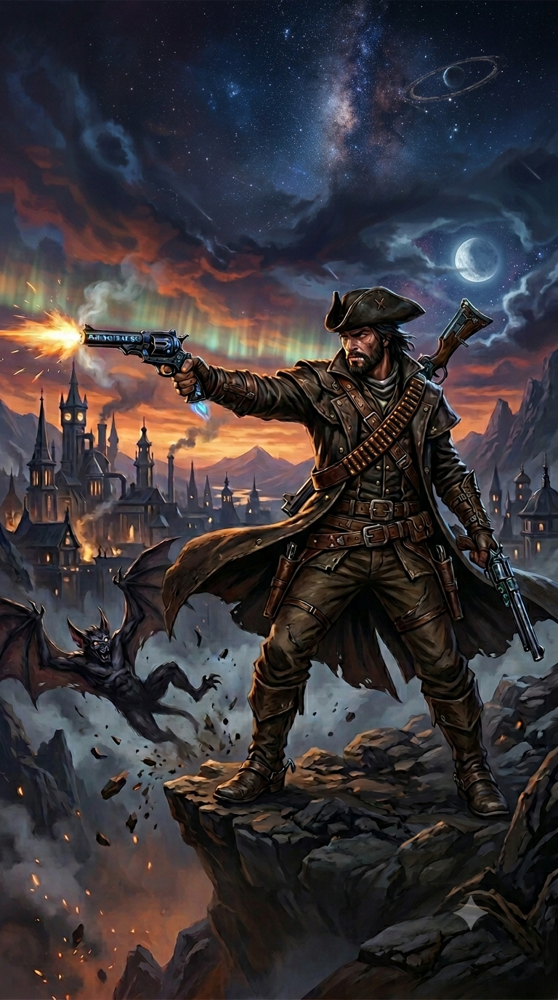
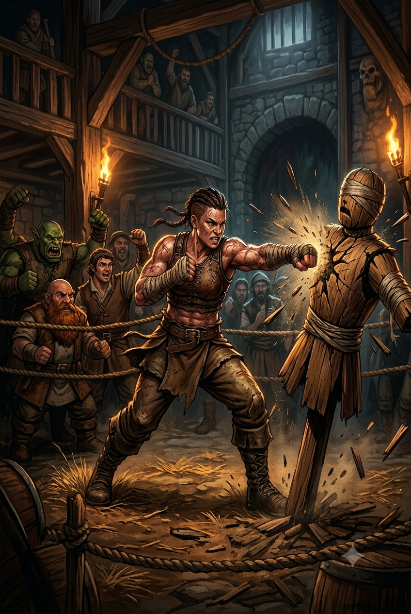

Classes Homebrew
Classes Disponíveis
Esta página reúne as classes homebrew oficiais da Guilda Caveira de Troll.
Caçador de Sangue

Introdução
Os Caçadores de Sangue são guerreiros vigilantes que dominam a secreta e esotérica magia de sangue para erradicar males antigos e novos. Para invocar poderosas maldições e aprimorar seus ataques contra terrores imunes à magia convencional, eles sacrificam deliberadamente sua própria vitalidade. Ao trilhar essa jornada solitária, esses guerreiros doam partes de si mesmos e vivem sob um rigoroso código de disciplina para não cederem à escuridão. Vagando distantes dos olhos da sociedade, eles buscam constantemente por novas ameaças sombrias e por aliados de mentalidade semelhante nos reinos.
Construção rápida do Caçador de Sangue
Você pode se tornar um Caçador de Sangue rapidamente seguindo estas sugestões. Primeiro, faça da Força ou da Destreza sua maior pontuação de habilidade, dependendo se deseja se concentrar em armas corpo-a-corpo ou armas a distância (ou armas de acuidade). Escolha Inteligência como a próxima pontuação mais alta se quiser se concentrar na potência das maldições de sangue e no poder místico. Em seguida, escolha uma Constituição mais alta, pois você quer ter pontos de vida extras para queimar em seu rito carmesim ou amplificar suas maldições de sangue. Em seguida, selecione o antecedente de orfão ou soldado.
Características de Classe
Como um Caçador de Sangue, você adquire as seguintes características de classe.
Pontos de Vida
- Dado de Vida: 1d10 por nivel de caçador
- Pontos de vida no 1º nivel: 10 + modificador de constituição
- Pontos de vida em niveis seguintes: 1d10 (or 6) + modificador de constituição por nivel de caçador de sangue depois do 1 nivel.
Proficiências
- Armadura: Armaduras leves, médias e escudos.
- Armas: Armas simples e marciais.
- Ferramentas: Suprimentos de Alquimia.
- Testes de Resistencia: Destreza e Inteligência
- Pericias: Escolha 3 dentre Atletismo, Acrobacia, Arcana, História, Percepção, Investigação, Religião e Sobrevivência.
Equipamento
Você começa com o seguinte equipamento, além do equipamento concedido pelo seu antecedente:
- (a) Uma arma marcial ou (b) duas armas simples
- (a) Uma besta leve e 20 flechas
- (a) Uma armadura de couro batido ou (b) armadura de escamas (brunéa)
- Um pacote de explorador e suprimentos de alquimia
| Nível | Bônus de Prof. | Características | Dado de Hemourgia | Maldição de Sangue |
|---|---|---|---|---|
| 1 | +2 | Ruína do Caçador, Maldição de Sangue | 1d4 | 1 |
| 2 | +2 | Estilo de Luta, Rito Carmesim | 1d4 | 1 |
| 3 | +2 | Ordem do Caçador do Sangue | 1d4 | 1 |
| 4 | +2 | Melhoria no Valor de Habilidade | 1d4 | 1 |
| 5 | +3 | Ataque Extra | 1d6 | 1 |
| 6 | +3 | Marca do Castigo, Aprimoramento da Maldição de Sangue | 1d6 | 2 |
| 7 | +3 | Característica de Ordem do Caçador de Sangue, Otimização do Rito Carmesim | 1d6 | 2 |
| 8 | +3 | Melhoria no Valor de Habilidade | 1d6 | 2 |
| 9 | +4 | Psicometria Sinistra | 1d6 | 2 |
| 10 | +4 | Ampliação Sombria | 1d6 | 3 |
| 11 | +4 | Característica de Ordem do Caçador de Sangue | 1d8 | 3 |
| 12 | +4 | Melhoria no Valor de Habilidade | 1d8 | 3 |
| 13 | +5 | Marca da Amarração, Aprimoramento da Maldição de Sangue | 1d8 | 3 |
| 14 | +5 | Alma Fortificada, Otimização do Rito Carmesim | 1d8 | 4 |
| 15 | +5 | Característica de Ordem do Caçador de Sangue | 1d8 | 4 |
| 16 | +5 | Melhoria no Valor de Habilidade | 1d8 | 4 |
| 17 | +6 | Aprimoramento da Maldição de Sangue | 1d10 | 4 |
| 18 | +6 | Característica de Ordem do Caçador de Sangue | 1d10 | 5 |
| 19 | +6 | Melhoria no Valor de Habilidade | 1d10 | 5 |
| 20 | +6 | Maestria Sanguínea | 1d10 | 5 |
Ruína do Caçador
No 1º nível, você sobreviveu ao Ruína do Caçador (Hunter's Bane) - um ritual perigoso e há muito tempo guardado que altera o sangue de sua vida, ligando-o para sempre à escuridão e aprimorando seus sentidos contra ela. Você tem vantagem em teste de Sabedoria (Sobrevivência) para rastrear seres feéricos, demônios ou mortos-vivos, bem como em testes de Inteligência para recuperar informações sobre essas criaturas. O Ruína do Caçador também capacita seu corpo a controlar e moldar a magia de Hemourgia, usando seu próprio sangue e essência vital para alimentar suas habilidades. Algumas de suas características exigem que o alvo faça uma salvaguarda para resistir aos efeitos dessa característica. A DC da salvaguarda é calculada da seguinte forma: DC da salvaguarda de Hemourgia = 8 + seu bônus de proficiência + seu modificador de Sabedoria ou Inteligência (escolha ao pegar o 1º nível nesta classe).
Maldição de Sangue
Também no 1º nível, você ganha a habilidade de canalizar — ou às vezes sacrificar — uma parte de sua essência vital para amaldiçoar e manipular criaturas por meio da magia hemourgia. Você conhece uma maldição de sangue de sua escolha, detalhada na seção "Maldições de sangue" no final da descrição da classe.
Você aprende uma maldição de sangue adicional de sua escolha no 6º, 10º, 14º e 18º níveis. Cada vez que você aprende uma nova maldição de sangue, também pode escolher uma das maldições de sangue que conhece e substituí-la por outra. Cada vez que usar a característica Maldição de Sangue, você escolhe qual maldição invocar dentre as que conhece. Enquanto estiver invocando uma maldição de sangue, mas antes que ela afete o alvo, você pode escolher amplificar a maldição sofrendo dano necrótico igual a uma rolagem do seu dado de hemourgia. Esse dano não pode ser reduzido de forma alguma. Uma maldição amplificada ganha um efeito adicional, registrado na descrição da maldição. As criaturas que não têm sangue são imunes a maldições de sangue, a menos que você tenha amplificado a maldição.
Depois de usar esse recurso, você deve terminar um descanso curto ou longo antes de poder usá-lo novamente. Você pode usar Maldição de Sangue duas vezes entre os descansos a partir do 6º nível, três vezes a partir do 13º nível e quatro vezes a partir do 17º nível.
Estilo de Luta
No 2º nível, você adota um estilo particular de luta como sua especialidade. Escolha uma das seguintes opções. Você não pode escolher a mesma opção de Estilo de Luta mais de uma vez, mesmo que possa escolher novamente.
- Arquearia: Você ganha um bônus de +2 nas rolagens de ataque que fizer com armas de ataque à distância.
- Duelista: Quando você empunhar uma arma de ataque corpo-a-corpo em uma mão e nenhuma outra arma, você ganha +2 de bônus nas jogadas de dano com essa arma.
- Combate com Armas Grandes: Quando você rolar um 1 ou um 2 num dado de dano de um ataque com arma corpo-a-corpo que você esteja empunhando com duas mãos, você pode rolar o(s) dado(s) novamente e usar a nova rolagem, mesmo que resulte em 1 ou 2. A arma deve ter a propriedade duas mãos ou versátil para ganhar esse benefício.
- Combate com duas Armas: Quando você estiver engajado em uma luta com duas armas, você pode adicionar o seu modificador de habilidade na jogada de dano do seu segundo ataque. (Estilos de Luta do Tasha também permitidos).
Rito Carmesim
Também no 2º nível, você aprende a invocar um rito de hemourgia que infunde energia elemental nos golpes de sua arma. Como uma ação bônus, você pode ativar qualquer rito que conheça em uma arma que esteja segurando. O efeito do rito dura até que você termine um descanso curto ou longo. Ao ativar um rito, você recebe dano necrótico igual a uma rolagem do seu dado de hemourgia. Esse dano não pode ser reduzido de forma alguma. Enquanto o rito estiver em vigor, os ataques que você faz com essa arma são considerados mágicos e causam dano extra igual ao seu dado de hemourgia do tipo determinado pelo rito escolhido. Uma arma pode ter apenas um rito ativo por vez. Outras criaturas não podem receber o benefício de seu rito. Você escolhe um rito dentre os ritos carmesim abaixo quando ganha essa característica pela primeira vez. Você aprende um rito carmesim adicional no 7º nível e novamente no 14º nível.
- Rito da Chama: O dano extra causado por seu rito é dano de fogo.
- Rito do Congelamento: O dano extra causado por seu rito é dano de frio.
- Rito da Tempestade: O dano extra causado por seu rito é o dano elétrico.
- Rito dos Mortos: O dano extra causado por seu rito é dano necrótico. (Pré-requisito: 14º nível).
- Rito do Oráculo: O dano extra causado por seu rito é dano psíquico. (Pré-requisito: 14º nível).
- Rito do Rugido: O dano extra causado por seu rito é dano de trovão. (Pré-requisito: 14º nível).
Ordem do Caçador de Sangue
No 3º nível, você se compromete com uma ordem de caçadores de sangue cuja filosofia o guiará por toda a sua vida: a Ordem dos Caça-Fantasmas, a Ordem do Lycans, a Ordem dos Mutantes ou a Ordem da Alma Profana, cada uma delas detalhada no final da descrição da classe. Sua escolha lhe concede outras características no 7º nível e novamente nos 11º, 15º e 18º níveis.
Melhoria no Valor de Habilidade
Quando você atinge o 4º nível e novamente no 8º, 10º, 12º, 16º e 19º nível, você pode aumentar um valor de habilidade, à sua escolha, em 2 ou você pode aumentar dois valores de habilidade, à sua escolha, em 1. Como padrão, você não pode elevar um valor de habilidade acima de 20 com essa característica.
Ataque Extra
A partir do 5º nível, você pode atacar duas vezes, ao invés de uma, sempre que você realizar a ação de Ataque no seu turno.
Marca do Castigo
No 6º nível, quando causar dano a uma criatura com uma arma para a qual tenha um rito carmesim ativo, você pode canalizar a magia de hemourgia para cravar uma marca arcana nessa criatura (nenhuma ação é necessária). Você sempre sabe a direção da criatura marcada, desde que ela esteja no mesmo plano que você. Além disso, toda vez que a criatura marcada causar dano a você ou a uma criatura que você possa ver em um raio de 5 pés, a criatura marcada sofrerá dano psíquico igual ao seu modificador (sab ou int) de Hemourgia (mínimo de 1). Sua marca dura até que você a desfaça ou até que você use essa característica para aplicar uma marca a outra criatura. Sua marca pode ser dissipada com a magia dissipar magia e é tratada como um feitiço com um nível igual à metade do seu nível de Caçador de Sangue (máximo de 9º nível). Depois de usar essa característica, você não poderá usá-la novamente até terminar um descanso curto ou longo.
Aprimoramento da Maldição de Sangue
A partir do 6º nível, você pode usar sua característica Maldição de Sangue duas vezes antes de ter que terminar um descanso curto ou longo para recuperá-los.
Característica da Ordem do Caçador de Sangue
No 7º nível, você ganha uma característica concedida pela sua Ordem dos Caçadores de Sangue.
Otimização do Rito Carmesim
No 7º nível, você aprende um Rito Carmesim adicional.
Psicometria Sinistra
Ao atingir o 9º nível, você adquire um talento sobrenatural para discernir os segredos que envolvem relíquias misteriosas ou locais tocados pelo mal. Sempre que fizer um teste de Inteligência (História) para recordar informações sobre a história sinistra ou trágica de um objeto que esteja tocando ou do local em que se encontra, você tem vantagem no teste. A critério do Mestre, uma rolagem adequadamente alta pode fazer com que seu personagem tenha breves visões do passado relacionadas ao objeto ou local.
Ampliação Sombria
A partir do 10º nível, a magia de hemourgia impregna seu corpo para reforçar permanentemente sua resistência. Sua velocidade aumenta em 5 pés e você tem um bônus nas salvaguardas de Força, Destreza e Constituição igual ao seu modificador (sab ou int) de Hemourgia (mínimo de +1).
Característica da Ordem do Caçador de Sangue
No 11º nível, você ganha uma característica concedida pela sua Ordem dos Caçadores de Sangue.
Marca da Amarração
A partir do 13º nível, o dano psíquico de sua Marca de Castigo aumenta para duas vezes o seu modificador de Hemourgia (mínimo de 2). Além disso, uma criatura com a marca não pode realizar a ação de Disparada e, se tentar se teletransportar ou sair de seu plano atual por qualquer meio, sofrerá 4d6 de dano psíquico e deverá fazer uma salvaguarda de Sabedoria usando a CD da sua Hemourgia. Em caso de falha, a tentativa de se teletransportar ou sair do plano falha.
Aprimoramento da Maldição de Sangue
A partir do 13º nível, você pode usar sua característica Maldição de Sangue três vezes antes de ter que terminar um descanso curto ou longo para recuperá-los.
Alma Fortificada
Ao atingir o 14º nível, você tem vantagem em salvaguardas contra ser encantado e amedrontado.
Otimização do Rito Carmesim
No 14º nível, você aprende um Rito Carmesim adicional.
Característica da Ordem do Caçador de Sangue
No 15º nível, você ganha uma característica concedida pela sua Ordem dos Caçadores de Sangue.
Aprimoramento da Maldição de Sangue
A partir do 17º nível, você pode usar sua característica Maldição de Sangue três vezes antes de ter que terminar um descanso curto ou longo para recuperá-los.
Característica da Ordem do Caçador de Sangue
No 18º nível, você ganha uma característica concedida pela sua Ordem dos Caçadores de Sangue.
Maestria Sanguínea
Ao atingir o 20º nível, seu domínio da magia de sangue atinge o auge, mitigando seu sacrifício e fortalecendo sua experiência. Uma vez por turno, sempre que uma característica de caçador de sangue exigir que você role um dado de hemourgia, você pode rolar novamente o dado e usar qualquer uma das rolagens. Além disso, sempre que obtiver um acerto crítico com uma arma para a qual tenha um rito carmesim ativo, você recupera um uso gasto de sua característica Maldição de Sangue.
Ordem dos Caça-Fantasmas
A Ordem do Caça-Fantasmas é a mais antiga ordem de caçadores de sangue, especializada no combate contra mortos-vivos e necromantes. Seus membros estudam a morte e os poderes profanos que fazem os mortos se erguerem, dedicando suas vidas a caçar e destruir essas ameaças onde quer que apareçam.
Rito da Aurora
Ao ingressar nessa ordem no 3º nível, você aprende o Rito da Aurora como parte de sua característica Rito Carmesim. Quando você ativa o Rito da Aurora, o dano extra causado pelo seu rito é dano radiante. Além disso, enquanto esse rito estiver ativo em sua arma, você recebe os seguintes benefícios:
- Sua arma emite luz brilhante a um alcance de um raio de 20 pés.
- Você tem resistência a dano necrótico.
- Quando você atinge uma criatura morta-viva com uma arma para a qual o Rito da Aurora está ativo, você rola um dado de hemourgia adicional ao determinar o dano extra do rito.
Especialista em Maldições
A partir do 3º nível, você aprende a dominar maldições de sangue. Você ganha um uso adicional de sua característica Maldição de Sangue. Além disso, suas maldições de sangue podem ter como alvo qualquer criatura, quer ela tenha sangue ou não.
Caminhada Etérea
Ao atingir o 7º nível, no início do seu turno, você pode entrar magicamente no véu entre os planos, desde que não esteja incapacitado. Você pode se mover através de outras criaturas e objetos como se elas fossem terrenos difíceis, bem como ver e afetar criaturas e objetos no Plano Etéreo. Você recebe 1d10 de dano de força se terminar seu turno dentro de um objeto ou criatura, terminando seu movimento e parando no espaço desocupado mais próximo.
Essa característica dura por um número de rodadas igual ao seu modificador de Hemourgia (sab ou int) (mínimo de 1 rodada). Se você estiver dentro de um objeto ou criatura quando a Caminhada Etérea terminar, você será imediatamente desviado para o espaço desocupado mais próximo e sofrerá dano de força igual ao dobro do número de pés que se moveu. Depois de usar esse recurso, você deve terminar um descanso curto ou longo antes de poder usá-lo novamente. Você pode usar Caminhada etérea duas vezes entre descansos a partir do 15º nível.
Marca da Fragmentação
A partir do 11º nível, sua Marca de Castigo expõe um fragmento da essência de seu inimigo, deixando-o vulnerável à sua característica Rito Carmesim. Sempre que atingir uma criatura com uma arma para a qual tenha um rito carmesim ativo, você rola um dado de hemourgia adicional ao determinar o dano extra do rito.
Além disso, se uma criatura marcada tiver a característica Movimento Incorpóreo ou uma característica semelhante, ela não poderá se mover através de criaturas ou objetos enquanto estiver marcada.
Maldição de Sangue do Exorcista
No 15º nível, você aprimora sua habilidade de hemourgia para arrancar a corrupção das mentes e dos corpos de seus aliados - e punir os responsáveis por ela. Você ganha a Maldição de Sangue do Exorcista para sua característica de Maldição de Sangue. Isso não é contabilizado em seu número de maldições de sangue conhecidas.
Rito de Reavivamento
Ao atingir o 18º nível, você aprende a proteger sua vida enfraquecida reabsorvendo a energia que alimenta suas armas. Se você tiver um ou mais ritos carmesins ativos e for reduzido a 0 pontos de vida, mas não morrer instantaneamente, poderá optar por encerrar todos os seus ritos carmesins ativos e cair para 1 ponto de vida.
Ordem dos Lycans
A antiga maldição da licantropia é temida por quase todos os povos, sendo transmitida pelo sangue e semeando a força selvagem e a fome de violência. A Ordem dos Lycans é um grupo de caçadores que se submetem à "Domesticação" — uma inflição cerimonial de licantropia modificada. Usando vontade intensa e rituais secretos de magia de sangue, eles aprendem a controlar e liberar suas formas híbridas por curtos períodos, ganhando capacidade física aprimorada e resiliência não natural. Sem cuidado e foco total, no entanto, até mesmo o maior dos caçadores pode se perder temporariamente em sua própria sede de sangue.
Sentidos Aprimorados
Ao escolher essa ordem no 3º nível, você ganha os sentidos aprimorados de um predador natural. Você tem vantagem em testes de Sabedoria (Percepção) que dependem da audição ou do olfato.
Transformação Híbrida
Também no 3º nível, você aprende a controlar a maldição licantrópica modificada. Como uma ação bônus, você se transforma em uma forma híbrida especial por até 1 hora. Você pode falar, usar equipamentos e usar armaduras enquanto estiver nessa forma e pode voltar à sua forma normal como uma ação bônus. Você volta automaticamente à sua forma normal se ficar inconsciente ou morrer.
Nota: Esse recurso não é considerado a licantropia do Manual dos Monstros. Depois de usar essa característica, você deve terminar um descanso curto ou longo antes de poder usá-la novamente. Enquanto estiver transformado, você ganha as seguintes características:
Poder Feral
Você tem vantagem nos testes de Força e nas salvaguardas de Força e tem um bônus de +1 nas rolagens de dano corpo a corpo. Esse bônus aumenta para +2 no 11º nível e para +3 no 18º nível.
O ônus da licantropia
A Ordem dos Licans é formada por indivíduos que escolhem este caminho com convicção, cientes dos desafios e do peso que ele impõe. Os caçadores de sangue Licans aceitam os dons da licantropia modificada e mantêm o controle por meio de treinamento intenso e magia de sangue. Membros da ordem não podem espalhar a maldição através do sangue, e a infecção de outra criatura só ocorre sob comando da ordem. Aqueles que são purificados contra a vontade retornam para uma nova iniciação. A licantropia modificada se apresenta em formas ligadas a feras específicas, como lobo, urso, tigre, javali e rato, definindo os traços físicos da transformação híbrida, embora os benefícios sejam uniformes.
Pele Resistente
Você tem resistência a dano concussivo, perfurante e cortante de ataques feitos por armas não mágicas e que não sejam revestidas por prata. Além disso, enquanto não estiver usando armadura pesada, você tem um bônus de +1 na CA.
Ataques Predatórios
Você pode aplicar sua característica Rito Carmesim aos seus golpes desarmados. Você pode usar Destreza em vez de Força para as rolagens de ataque e dano de seus golpes desarmados, que causam 1d6 de dano de concussão ou cortante. Esse dano aumenta para 1d8 no 11º nível. Além disso, ao usar a ação de ataque para fazer um golpe desarmado, você pode fazer um golpe desarmado adicional usando sua ação bônus.
Sede de Sangue
Se começar o seu turno com menos pontos de vida do que a metade do seu máximo, você deve ser bem-sucedido em uma salvaguarda de Sabedoria DC 8 ou mover-se diretamente em direção à criatura mais próxima e usar a ação de Ataque contra ela. Se estiver concentrado em um feitiço ou sob efeito que impeça concentração (como Fúria), você falha automaticamente. Após o ataque ser resolvido, você recupera o controle.
Proeza do Perseguidor
No 7º nível, sua velocidade aumenta em 10 pés e você adiciona 10 pés à sua distância de salto em distância e em altura. Sua forma híbrida também recebe o benefício abaixo:
Golpes Predatórios Aprimorados
Você tem um bônus de +1 nas rolagens de ataque feitas com seus ataques desarmados (+2 no 11º nível, +3 no 18º). Além disso, quando tiver um Rito Carmesim ativo enquanto em forma híbrida, seus golpes desarmados são considerados mágicos.
Transformação Avançada
No 11º nível, você pode usar sua característica Transformação Híbrida duas vezes, recuperando os usos ao terminar um descanso curto ou longo.
Regeneração Lycan
No início de cada turno, se tiver pelo menos 1 PV mas menos que a metade do máximo, você ganha pontos de vida iguais a 1 + seu modificador de Constituição. Se estiver na forma híbrida, você ganha isso antes da salvaguarda de Sede de Sangue.
Marca do Voraz
A partir do 15º nível, você tem vantagem na salvaguarda de Sabedoria para sua Sede de Sangue na forma híbrida. Além disso, você tem vantagem em rolagens de ataque contra uma criatura marcada pela sua Marca de Castigo.
Domínio da Transformação Híbrida
No 18º nível, você pode usar a Transformação Híbrida um número ilimitado de vezes, e a forma dura até que você volte ao normal, fique inconsciente ou morra. Você também ganha a Maldição de Sangue do Uivo (não conta no número de maldições conhecidas).
Ordem dos Mutantes
Os membros da Ordem dos Mutantes especializam-se em avaliar pontos fortes e fracos de seus inimigos, alterando sua própria biologia através de alquimia corrompida e elixires tóxicos para estarem preparados para qualquer conflito.
Mutagênese
Ao escolher essa ordem no 3º nível, você aprende a dominar mutagênicos. Como uma ação bônus, você consome um mutagênico cujos efeitos e efeitos colaterais duram até um descanso curto ou longo. Você pode expulsar esses efeitos a qualquer momento usando uma ação. Mutagênicos são instáveis e perdem a potência se não forem usados antes do próximo descanso.
| Nível de Caçador | Mutagênicos Criados | Fórmulas Conhecidas |
|---|---|---|
| 3º | 1 | 4 |
| 7º | 2 | 5 |
| 11º | 2 | 6 |
| 15º | 3 | 7 |
| 18º | 3 | 8 |
Mutagênicos
- Ágilidade: Vantagem em testes de Destreza; desvantagem em testes de Sabedoria.
- Blindado: Resistência a dano cortante; vulnerabilidade a dano de concussão.
- Brasas: Resistência a dano de fogo; vulnerabilidade a dano de frio.
- Celeridade: +2 em Destreza (máx +5); desvantagem em salvaguardas de Sabedoria.
- Crueldade (11º nível): Ataque adicional com ação bônus; desvantagem em salvaguardas de Int, Sab e Car.
- Éter (11º nível): Deslocamento de voo de 20 pés; desvantagem em testes de Força e Destreza.
- Gélido: Resistência a dano de frio; vulnerabilidade a dano de fogo.
- Impermeável: Resistência a dano perfurante; vulnerabilidade a dano cortante.
- Inquebrável: Resistência a dano de concussão; vulnerabilidade a dano perfurante.
- Letrado: Vantagem em testes de Inteligência; desvantagem em testes de Sabedoria.
- Móvel: Imunidade a Agarrado/Restringido (paralisado no 11º nível); desvantagem em Força.
- Olho-da-Noite: Visão no escuro (+60 pés); desvantagem sob luz solar direta.
- Percetivo: Vantagem em testes de Sabedoria; desvantagem em testes de Carisma.
- Potência: +2 em Força (máx +5); desvantagem em salvaguardas de Destreza.
- Precisão (11º nível): Crítico em 19-20; desvantagem em salvaguardas de Força.
- Rapidez: +10 pés de velocidade (+5 no 15º nível); desvantagem em testes de Inteligência.
- Reconstrução Molecular (7º nível): Regenera PV igual ao bônus de proficiência; velocidade -10 pés.
- Ruborização: Uso extra de Maldição de Sangue; desvantagem em salvaguardas contra a morte.
- Sapiência: +2 em Inteligência (máx +5); desvantagem em salvaguardas de Carisma.
- Sedutor: Vantagem em testes de Carisma; desvantagem em iniciativa.
Metabolismo Estranho
No 7º nível, você ganha imunidade a dano de veneno e à condição envenenado. Uma vez por descanso longo, como ação bônus, você pode ignorar os efeitos colaterais negativos de um mutagênico por 1 minuto.
Marca do Axioma
No 11º nível, sua Marca de Castigo dissipa ilusões e invisibilidade. Criaturas marcadas em forma alternativa devem passar em uma salvaguarda de Sabedoria ou reverterão para sua forma verdadeira e ficarão atordoadas.
Maldição de Sangue da Corrosão
No 15º nível, você ganha a Maldição de Sangue da Corrosão, que não conta para o seu limite de maldições conhecidas.
Mutação Exaltada
No 11º nível, como ação bônus, você pode trocar um mutagênico ativo por outro que você conheça, um número de vezes igual ao seu modificador de Hemourgia por descanso longo.
Ordem da Alma Profana
Os caçadores de sangue pertencentes à Ordem da Alma Profana ampliaram os limites da hemociência para usá-la contra algumas das criaturas mais terríveis que corrompem o mundo. Membros desta ordem mergulharam no poço de conhecimento arcano corruptor, fazendo pactos com males menores para combater melhor as ameaças maiores, trocando uma parte de si mesmos pelo poder necessário para a caçada.
Patrono do Outro Mundo & Pacto de Sangue
Ao atingir o 3º nível, você firma um pacto de sangue irrevogável com um ser extraplanar. Você deve registrar este pacto em sua ficha. Os patronos disponíveis incluem:
- PHB: Arquifada, Ínfero ou Grande Ancião.
- SCAG: O Imortal.
- XGE: O Celestial ou Hexblade.
- TCE: O Insondável ou o Gênio.
- VRGtR: O Morto-vivo.
Tabela de Magias de Pacto
| Nível | Truques Conhecidos | Magias Conhecidas | Espaços de Magia | Nível de Espaço |
|---|---|---|---|---|
| 3º–5º | 2 | 2–3 | 1 | 1º |
| 6º–12º | 2–3 | 2–6 | 2 | 1º–2º |
| 13º–18º | 3 | 7–9 | 2 | 3º |
| 19º–20º | 3 | 10–11 | 2 | 4º |
Magia de Pacto de Sangue
Ao atingir o 3º nível, você aumenta suas técnicas de combate com a habilidade de conjurar feitiços. Consulte o capítulo 10 do Livro do Jogador para regras gerais de conjuração e utilize a lista de feitiços do Bruxo para esta subclasse. Seu atributo de conjuração é Inteligência.
Regras de Conjuração
- Truques: Você aprende dois truques de Bruxo no 3º nível e um adicional no 10º nível.
- Espaços de Feitiço: A tabela indica quantos espaços você possui; todos possuem o mesmo nível. Você gasta um espaço para conjurar magias de 1º nível ou superior e recupera todos ao terminar um descanso curto ou longo.
- Feitiços Conhecidos: Você aprende novos feitiços conforme a tabela. Ao subir de nível, você pode substituir um feitiço conhecido por outro da lista de Bruxo, desde que tenha espaço disponível.
- Habilidade de Conjuração: Sua habilidade de Hemourgia (Int ou Sab) define a CD e o modificador de ataque:
- CD da Salvaguarda: 8 + bônus de proficiência + modificador de Hemourgia.
- Modificador de Ataque: bônus de proficiência + modificador de Hemourgia.
Rito Carmesim Focalizado
A partir do 3º nível, sua arma serve como foco arcano enquanto um rito carmesim estiver ativo. Cada patrono concede um benefício único:
- A Arquifada: Ao causar dano com uma arma para a qual tenha um rito carmesim ativo, o alvo brilha com uma luz pálida, perdendo quaisquer benefícios de cobertura ou invisibilidade até o final do seu próximo turno.
- O Celestial: Como uma ação bônus, você pode gastar um uso de sua característica Maldição de Sangue para curar uma criatura visível a até 60 pés. A criatura recupera pontos de vida iguais a uma rolagem do seu dado de hemourgia + seu modificador de Hemourgia (mínimo de 1).
- O Insondável: Você pode respirar embaixo d'água e adquire deslocamento de natação igual ao seu deslocamento terrestre. Além disso, uma vez por turno, ao causar dano a uma criatura com uma arma com rito carmesim ativo, você pode reduzir o deslocamento do alvo em 10 pés até o início do seu próximo turno.
- O Ínfero: Quando você ativa ou causa dano com o Rito da Chama, você pode rolar novamente qualquer dado de dano extra do rito que resulte em 1 ou 2, sendo obrigado a usar a nova rolagem.
- O Gênio: Como uma ação bônus, você pode gastar um uso de sua característica Maldição de Sangue para flutuar misticamente, ganhando deslocamento de voo de 30 pés por um número de rodadas igual ao seu modificador de Hemourgia (mínimo de 1 rodada).
- O Grande Ancião: Quando você obtém um acerto crítico com uma arma para a qual tenha um rito carmesim ativo, o alvo e quaisquer criaturas à sua escolha em um raio de 10 pés dele ficam amedrontados por você até o final do seu próximo turno.
- O Hexblade: Quando você amaldiçoa uma criatura com uma maldição de sangue, a próxima jogada de ataque que você fizer contra ela antes do final do seu próximo turno causa dano extra igual ao seu bônus de proficiência.
- O Morto-vivo: Ao sofrer dano necrótico, você pode usar sua reação para reduzir esse dano pela metade. Além disso, suas feições físicas adquirem temporariamente traços que refletem os aspectos de seu patrono enquanto você mantiver um rito carmesim ativo.
- O Imortal: Sempre que você reduzir uma criatura hostil a 0 pontos de vida com um ataque de arma, você recupera pontos de vida iguais a uma rolagem do seu dado de hemourgia.
Frenesi Místico
No 7º nível, ao usar sua ação para conjurar um feitiço, você pode realizar um único ataque com uma arma como uma ação bônus.
Arcana Revelada
No 7º nível, seu patrono concede um feitiço específico que pode ser conjurado usando um espaço de magia de pacto. Você não pode usá-lo novamente até terminar um descanso longo.
- A Arquifada: Nublar
- O Celestial: Restauração Menor
- O Insondável: Rajada de Vento
- O Ínfero: Raio Ardente
- O Gênio: Força Fantasmagórica
- O Grande Ancião: Detectar Pensamentos
- O Hexblade: Marca da Punição
- O Morto-vivo: Cegueira/Surdez
- O Imortal: Silêncio
Marca da Cicatriz da Sabotagem
No 11º nível, sua característica Marca do Castigo crava cicatrizes arcanas escuras em seu alvo, deixando-o vulnerável à sua magia. Uma criatura marcada por você tem desvantagem nas salvaguardas contra suas magias de Bruxo desta subclasse.
Arcana Desencadeada
No 15º nível, seu patrono lhe concede um único uso de um feitiço adicional baseado em seu pacto. Você lança esse feitiço sem gastar um espaço de feitiço e não pode fazê-lo novamente até terminar um descanso longo.
- A Arquifada: Lentidão
- O Celestial: Revivificar
- O Insondável: Relâmpago
- O Ínfero: Bola de Fogo
- O Gênio: Proteção contra Energia
- O Grande Ancião: Velocidade
- O Hexblade: Piscar
- O Morto-vivo: Falar com os Mortos
- O Imortal: Rogar Maldição
Maldição de Sangue do Devorador de Almas
No 18º nível, você aprende a sugar a energia vital de sua presa caída. Você recebe a Maldição de Sangue do Devorador de Almas para sua característica Maldição de Sangue. Isso não é contabilizado em seu número total de maldições de sangue conhecidas.
Maldições de Sangue do Caçador de Sangue
Maldição de Sangue da Vinculação
Como uma ação bônus, você tenta prender uma criatura Grande ou menor em um raio de 30 pés; ela deve fazer uma salvaguarda de Força. Se falhar, sua velocidade é reduzida a 0 e ela não pode usar reações até o final do seu próximo turno.
Amplificar: Dura 1 minuto e afeta qualquer criatura, independentemente do tamanho. A criatura pode repetir a salvaguarda de Força no final de cada um de seus turnos para encerrar o efeito.
Maldição de Sangue da Agonia Quistosa
Como uma ação bônus, você amaldiçoa uma criatura em 30 pés, fazendo seu corpo inchar até o final do seu próximo turno. Durante esse período, a criatura tem desvantagem em testes de Força e Destreza e recebe 1d8 de dano necrótico se fizer mais de um ataque no turno.
Amplificar: Dura 1 minuto. A criatura pode fazer uma salvaguarda de Constituição ao final de cada turno para encerrar a maldição.
Maldição de Sangue da Exposição
Quando uma criatura em 30 pés receber dano de um ataque ou feitiço, use sua reação para enfraquecer sua resiliência. Até o final do próximo turno do alvo, ele perde a resistência aos tipos de dano causados por aquele efeito.
Amplificar: O alvo perde a imunidade aos tipos de dano do efeito desencadeante, mas ganha resistência a esses tipos de dano até o final de seu próximo turno.
Maldição de Sangue da Ansiedade
Como uma ação bônus, você amaldiçoa uma criatura em 30 pés. Até o final do seu próximo turno, testes de Carisma (Intimidação) contra o alvo têm vantagem.
Amplificar: A próxima salvaguarda de Sabedoria que a criatura fizer antes do fim dessa maldição será feita com desvantagem.
Maldição de Sangue da Cegueira
Ao ver uma criatura em 30 pés fazer um ataque, use sua reação para rolar um dado de hemourgia e subtraí-lo do resultado. Você pode usar este recurso após a rolagem, mas antes da definição do acerto. Criaturas imunes à condição cego são imunes a esta maldição.
Amplificar: Aplica-se a todas as rolagens de ataque da criatura até o final do turno dela. O dado é rolado separadamente para cada ataque.
Maldição de Sangue do Fantoche dos Caídos
Quando uma criatura em 30 pés cair para 0 pontos de vida, use sua reação para incutir um último ato de agressão. Ela faz imediatamente um ataque com arma ou desarmado contra um alvo ao seu alcance.
Amplificar: Você pode fazer com que a criatura se mova até metade de seu deslocamento total e concede um bônus à rolagem de ataque igual ao seu modificador de Hemourgia.
Maldição de Sangue dos Marcados
Como ação bônus, mark uma criatura em 30 pés. Até o final do seu turno, sempre que atingi-la com uma arma com rito carmesim ativo, você rola um dado de hemourgia adicional para o dano do rito.
Amplificar: A próxima rolagem de ataque contra o alvo antes do final do seu turno tem vantagem.
Maldição de Sangue da Mente Turva
Como ação bônus, amaldiçoe uma criatura em 30 pés que esteja se concentrando em um feitiço ou característica. Ela tem desvantagem na próxima salvaguarda de Constituição para manter a concentração até o final do seu próximo turno.
Amplificar: O alvo tem desvantagem em todas as salvaguardas de Constituição para manter a concentração até o final do seu próximo turno.
Maldição de Sangue da Corrosão
Pré-requisito: 15º nível (Ordem dos Mutantes).
Como ação bônus, uma criatura em 30 pés fica envenenada. Ela pode realizar uma salvaguarda de Constituição ao final de cada turno para encerrar o efeito.
Amplificar: O alvo recebe 4d6 de dano necrótico ao ser amaldiçoado e sempre que falhar na salvaguarda para encerrar o efeito.
Maldição de Sangue do Exorcista
Pré-requisito: 15º nível (Ordem dos Caça-Fantasmas).
Como ação bônus, uma criatura em 30 pés que esteja encantada, assustada ou possuída é imediatamente libertada desses estados.
Amplificar: A criatura responsável pela condição recebe 3d6 de dano psíquico e deve passar em uma salvaguarda de Sabedoria ou ficará atordoada até o final do seu próximo turno.
Maldição de Sangue do Uivo
Pré-requisito: 18º nível (Ordem dos Licans).
Como uma ação, você solta um uivo de gelar o sangue. Cada criatura em 30 pés que possa ouvi-lo deve passar em uma salvaguarda de Sabedoria ou ficará amedrontada por você até o final do seu próximo turno. Se falhar por 5 ou mais, a criatura fica atordoada enquanto estiver assustada. Criaturas que passarem na salvaguarda ficam imunes por 24 horas.
Amplificar: O alcance da maldição aumenta para 60 pés.
Maldição de Sangue do Devorador de Almas
Pré-requisito: 18º nível (Ordem da Alma Profana).
Quando uma criatura (que não seja um construto ou morto-vivo) for reduzida a 0 pontos de vida em 30 pés, use sua reação para oferecer sua energia vital ao seu patrono. Até o final do seu próximo turno, você ganha vantagem em ataques e resistência a todo tipo de dano.
Amplificar: Você recupera um espaço de feitiço de Bruxo desta subclasse. Após amplificar, você deve terminar um descanso longo antes de poder amplificá-la novamente.
Maldição de Sangue da Vinculação
Como uma ação bônus, você tenta prender uma criatura Grande ou menor em um raio de 30 pés; ela deve fazer uma salvaguarda de Força. Se falhar, sua velocidade é reduzida a 0 e ela não pode usar reações até o final do seu próximo turno.
Amplificar: Dura 1 minuto e afeta qualquer criatura, independentemente do tamanho. A criatura pode repetir a salvaguarda de Força no final de cada um de seus turnos para encerrar o efeito.
Maldição de Sangue da Agonia Quistosa
Como uma ação bônus, você amaldiçoa uma criatura em 30 pés, fazendo seu corpo inchar até o final do seu próximo turno. Durante esse período, a criatura tem desvantagem em testes de Força e Destreza e recebe 1d8 de dano necrótico se fizer mais de um ataque no turno.
Amplificar: Dura 1 minuto. A criatura pode fazer uma salvaguarda de Constituição ao final de cada turno para encerrar a maldição.
Maldição de Sangue da Exposição
Quando uma criatura em 30 pés receber dano de um ataque ou feitiço, use sua reação para enfraquecer sua resiliência. Até o final do próximo turno do alvo, ele perde a resistência aos tipos de dano causados por aquele efeito.
Amplificar: O alvo perde a imunidade aos tipos de dano do efeito desencadeante, mas ganha resistência a esses tipos de dano até o final de seu próximo turno.
Maldição de Sangue da Ansiedade
Como uma ação bônus, você amaldiçoa uma criatura em 30 pés. Até o final do seu próximo turno, testes de Carisma (Intimidação) contra o alvo têm vantagem.
Amplificar: A próxima salvaguarda de Sabedoria que a criatura fizer antes do fim dessa maldição será feita com desvantagem.
Maldição de Sangue da Cegueira
Ao ver uma criatura em 30 pés fazer um ataque, use sua reação para rolar um dado de hemourgia e subtraí-lo do resultado. Você pode usar este recurso após a rolagem, mas antes da definição do acerto. Criaturas imunes à condição cego são imunes a esta maldição.
Amplificar: Aplica-se a todas as rolagens de ataque da criatura até o final do turno dela. O dado é rolado separadamente para cada ataque.
Maldição de Sangue do Fantoche dos Caídos
Quando uma criatura em 30 pés cair para 0 pontos de vida, use sua reação para incutir um último ato de agressão. Ela faz imediatamente um ataque com arma ou desarmado contra um alvo ao seu alcance.
Amplificar: Você pode fazer com que a criatura se mova até metade de seu deslocamento total e concede um bônus à rolagem de ataque igual ao seu modificador de Hemourgia.
Maldição de Sangue dos Marcados
Como ação bônus, mark uma criatura em 30 pés. Até o final do seu turno, sempre que atingi-la com uma arma com rito carmesim ativo, você rola um dado de hemourgia adicional para o dano do rito.
Amplificar: A próxima rolagem de ataque contra o alvo antes do final do seu turno tem vantagem.
Maldição de Sangue da Mente Turva
Como ação bônus, amaldiçoe uma criatura em 30 pés que esteja se concentrando em um feitiço ou característica. Ela tem desvantagem na próxima salvaguarda de Constituição para manter a concentração até o final do seu próximo turno.
Amplificar: O alvo tem desvantagem em todas as salvaguardas de Constituição para manter a concentração até o final do seu próximo turno.
Maldição de Sangue da Corrosão
Pré-requisito: 15º nível (Ordem dos Mutantes).
Como ação bônus, uma criatura em 30 pés fica envenenada. Ela pode realizar uma salvaguarda de Constituição ao final de cada turno para encerrar o efeito.
Amplificar: O alvo recebe 4d6 de dano necrótico ao ser amaldiçoado e sempre que falhar na salvaguarda para encerrar o efeito.
Maldição de Sangue do Exorcista
Pré-requisito: 15º nível (Ordem dos Caça-Fantasmas).
Como ação bônus, uma criatura em 30 pés que esteja encantada, assustada ou possuída é imediatamente libertada desses estados.
Amplificar: A criatura responsável pela condição recebe 3d6 de dano psíquico e deve passar em uma salvaguarda de Sabedoria ou ficará atordoada até o final do seu próximo turno.
Maldição de Sangue do Uivo
Pré-requisito: 18º nível (Ordem dos Licans).
Como uma ação, você solta um uivo de gelar o sangue. Cada criatura em 30 pés que possa ouvi-lo deve passar em uma salvaguarda de Sabedoria ou ficará amedrontada por você até o final do seu próximo turno. Se falhar por 5 ou mais, a criatura fica atordoada enquanto estiver assustada. Criaturas que passarem na salvaguarda ficam imunes por 24 horas.
Amplificar: O alcance da maldição aumenta para 60 pés.
Maldição de Sangue do Devorador de Almas
Pré-requisito: 18º nível (Ordem da Alma Profana).
Quando uma criatura (que não seja um construto ou morto-vivo) for reduzida a 0 pontos de vida em 30 pés, use sua reação para oferecer sua energia vital ao seu patrono. Até o final do seu próximo turno, você ganha vantagem em ataques e resistência a todo tipo de dano.
Amplificar: Você recupera um espaço de feitiço de Bruxo desta subclasse. Após amplificar, você deve terminar um descanso longo antes de poder amplificá-la novamente.
Pistoleiro

Introdução
Nascidos com uma afinidade natural pelo perigo, Pistoleiros combinam sagacidade mordaz com o domínio de armas de fogo raras e exóticas. Entre tiros impossíveis e uma independência inabalável, eles encaram as masmorras mais sombrias como palcos para sua graça estilística. No campo de batalha, são batedores letais que utilizam o estrondo de suas armas para semear o pânico, protegendo seus aliados com uma lealdade feroz.
Características de Classe
Como um Pistoleiro, você adquire as seguintes características de classe.
Pontos de Vida
- Dados de Vida: 1d8 por nível de Pistoleiro
- Pontos de Vida no 1º Nível: 8 + seu modificador de Constituição
- Pontos de Vida em Níveis Superiores: 1d8 (ou 5) + seu modificador de Constituição por nível de Pistoleiro após o 1º
Proficiências
- Testes de Resistência: Destreza, Carisma
- Armaduras: Armaduras leves, armaduras médias
- Armas: Armas de fogo, armas simples, todas as bestas, espadas curtas, cimitarras, rapieiras e chicotes
- Ferramentas: Ferramentas de Funileiro e instrumento musical de sua escolha
- Perícias: Escolha 2 entre Acrobacia, Adestrar Animais, Atuação, História, Intimidação, Intuição, Investigação, Percepção, Persuasão, Prestidigitação ou Sobrevivência
Equipamento
Você começa com o seguinte equipamento, além do equipamento concedido pelo seu antecedente:
- (a) Pistola de Palma, 20 munições e um chicote ou (b) Pederneira e 10 munições
- (a) Brunea ou (b) armadura de couro e ferramentas de funileiro
- (a) Um pacote do explorador ou (b) um pacote do aventureiro
| Nível | Bônus de Proficiência | Características |
|---|---|---|
| 1º | +2 | O Linguajar, Saque Rápido, Façanhas com Armas |
| 2º | +2 | Estilo de Luta, Astúcia |
| 3º | +2 | Trilha do Atirador, Amuleto da Sorte |
| 4º | +2 | Incremento no Valor de Habilidade |
| 5º | +3 | Ataque Extra |
| 6º | +3 | Hora do Chumbo |
| 7º | +3 | Evasão |
| 8º | +3 | Incremento no Valor de Habilidade |
| 9º | +4 | Característica de Trilha do Atirador |
| 10º | +4 | Astúcia (Melhoria) |
| 11º | +4 | Sentido de Tiroteio |
| 12º | +4 | Incremento no Valor de Habilidade |
| 13º | +5 | Característica de Trilha do Atirador, Melhoria do Item da Sorte |
| 14º | +5 | Vigilância |
| 15º | +5 | Enganando a Morte |
| 16º | +5 | Incremento no Valor de Habilidade |
| 17º | +6 | Característica de Trilha do Atirador |
| 18º | +6 | Reflexos Sobrenaturais |
| 19º | +6 | Incremento no Valor de Habilidade |
| 20º | +6 | Pistoleiro Superior |
O Linguajar
No 1º nível, você aprende uma linguagem antiga e ritualizada, praticada por pistoleiros e sociedades secretas do passado. É um código de padrões de fala e dialetos onde cada sílaba contém nuances complexas e múltiplos significados.
Esta linguagem só pode ser compreendida por aqueles que a conhecem. Além disso, você pode entender e escrever símbolos antigos e jargões que transmitem mensagens em inscrições enganosamente curtas. Essa escrita é comumente usada para registrar histórias ou rituais; livros contendo O Linguajar são tesouros procurados por linguistas e estudiosos devido ao potencial de conterem magias perdidas ou rico conhecimento histórico.
Saque Rápido
Também no 1º nível, suas mãos tornam-se rápidas como um relâmpago. Você pode guardar uma arma e sacar outra como parte do seu movimento ou de sua ação, sem a necessidade de utilizar a ação Usar Objeto. Além disso, você não precisa de uma mão livre para recarregar armas que possuam a propriedade carregamento.
Façanhas com Armas
A partir do 1º nível, você desenvolveu um conjunto de façanhas de combate. Enquanto estiver empunhando uma arma de fogo, você ganha as seguintes opções:
- Coronhaço: Quando você realiza um ataque corpo-a-corpo usando uma arma de fogo, você utiliza seu modificador de Força ou Destreza (à sua escolha) para as jogadas de ataque e dano causando 1d4 + Modificador de Força ou Destreza de dano contundente. Se o ataque atingir, você pode usar sua ação bônus para não provocar ataques de oportunidade do alvo até o final do seu turno.
- Tiro de Precisão: Seus olhos e reflexos estão perfeitamente sincronizados com o seu armamento. Você pode adicionar o seu modificador de Destreza nas jogadas de dano com armas de fogo.
Ao atingir o nível 3 você desbloqueia outra dessas Façanhas.
- Correr e Atirar: Você pode usar a ação de Desengajar como uma ação bônus.
Astúcia
No 2º nível, escolha uma perícia ou ferramenta na qual você seja proficiente. Seu bônus de proficiência é dobrado para qualquer teste de habilidade que use essa escolha.
Estilo de Luta
No 2º nível você adota um estilo particular de luta. Escolha uma das seguintes opções. Você não pode escolher o mesmo estilo de luta duas vezes, mesmo que possa escolher novamente.
Tiro de Akimbo
Quando você realizar a ação de ataque com uma arma como propriedade leve, você pode usar uma ação bônus para fazer um ataque com uma arma leve à distância que você esteja empunhando. Você não adiciona seu modificador de habilidade ao dano deste ataque, a menos que esse modificador seja negativo.
Transgressor
Quando você acerta um alvo com uma jogada de ataque à distância, se você rolar 1 ou 2 em qualquer dado de dano, você pode rolar novamente o (os) dado (os) de dano e deve usar a nova rolagem mesmo que o número seja 1 ou 2. Para obter esse benefício o acerto tem que ser feito com uma arma de fogo.
Olho da Morte
Você recebe um bônus de +2 nas jogadas de ataque feitas com armas simples e marciais à distância, bem como armas de fogo. Esse benefício não se acumula com o estilo de luta de Arquearia.
Duelo de Pistoleiro
Ao empunhar uma arma de fogo de uma mão e nenhuma outra arma, você recebe um bônus de +2 em suas jogadas de dano com essas armas. Este dano adicional se aplica apenas a ataques à distância feitos contra criaturas a até 30 pés de você.
Atirador de Elite
Você ganha um bônus de +2 nas jogadas de dano se atacar uma criatura a mais de 30 pés de distância de você com uma arma de longo alcance ou uma arma de fogo que você não tenha desvantagem no ataque.
Defesa
Enquanto estiver usando uma armadura, você recebe um bônus de +1 na CA.
Trilha do Atirador
No 3º nível você começa a se especializar para seguir um estilo particular de atirador. Você pode escolher entre Destruidor de Mitos, Virtuoso, Vaqueiro ou Desbravador, todos detalhados no final da descrição da classe.
A trilha escolhida concede recursos no 3º nível e novamente no 9º, 13º e 17º nível.
Amuleto da Sorte
Ao atingir o 3º nível, você adota um amuleto pessoal que lhe concede uma sorte incrível em situações específicas e reflete um traço único da sua personalidade. Este objeto pode assumir a forma de um chapéu trancado por um cadeado que você nunca tira, um lenço costurado por um amor perdido ou um charuto que nunca apaga e jamais consome o tabaco.
Escolha um benefício e uma peculiaridade da tabela abaixo. Você pode utilizar o efeito do benefício escolhido uma vez por descanso longo. Se o seu amuleto da sorte for perdido ou destruído, ele reaparecerá misteriosamente com você ao final do seu próximo descanso longo.
Ao atingir o 13º nível, você pode escolher um benefício e uma peculiaridade adicionais da tabela. Além disso, você passa a poder utilizar cada um de seus benefícios duas vezes antes de precisar completar um descanso longo.
Opções de Amuleto
| Nome | Benefício |
|---|---|
| Hábil | Você aprende as magias identificar e localizar objeto, podendo conjurá-las como rituais. |
| Destemido | Você pode usar uma ação para encerrar um efeito em si mesmo que o esteja deixando amedrontado. |
| Aliviante | Após meditar por 1 minuto com o amuleto, você recupera Dados de Vida iguais a 1/3 do seu nível de pistoleiro (mínimo 1). |
| Cavaleiro | Você aprende a magia sentido bestial e pode conjurá-la como um ritual. |
| Perseguidor | Você aprende marca do caçador e pode conjurá-la uma vez por descanso longo sem gastar espaços de magia. |
| Arguto | Você ganha uma Manobra de Mestre de Batalha e a trata como um Truque de Virtuoso. |
Peculiaridades do Amuleto
Além do benefício principal, seu amuleto possui uma peculiaridade:
| Nome | Efeito |
|---|---|
| Adepto | Você ganha proficiência em duas armas de sua escolha. |
| Eloquente | Você aprende dois idiomas de sua escolha. |
| Bom Vivant | Você ganha proficiência em dois conjuntos de jogos de sua escolha. |
| Erudito | Você ganha proficiência em uma perícia ou ferramenta de sua escolha. |
Incremento no valor de habilidade
Quando você atinge o 4° nível e novamente no 8°, 10º, 12°, 16° e 19° nível, você pode aumentar um valor de habilidade, à sua escolha, em 2 ou você pode aumentar dois valores de habilidade, à sua escolha, em 1. Como padrão, você não pode elevar um valor de habilidade acima de 20 com essa característica.
Ataque extra
A partir do 5º nível, você pode atacar duas vezes, em vez de uma, sempre que realizar a ação de Ataque no seu turno.
Além disso, quando você realiza a ação de Ataque no seu turno, você pode renunciar a um de seus ataques para recarregar sua arma.
Hora do Chumbo
A partir do 6º nível, você aprimorou seus sentidos para evitar ataques com facilidade. Agora você pode realizar a ação Esquivar usando uma ação bônus. Você pode fazer isso um número de vezes igual ao seu modificador de Destreza. Você recupera o uso desta característica ao completar um descanso longo.
Evasão
A partir do 7º nível, seus reflexos são tão rápidos quanto qualquer bala disparada de sua arma. Quando você for alvo de um efeito que exige um teste de resistência de Destreza para sofrer metade do dano, você não sofre dano algum se passar, e somente metade do dano se falhar.
Astúcia
Ao atingir o 10º nível, você pode escolher uma habilidade adicional ou proficiência em ferramenta para obter esse benefício.
Sentido de Tiroteio
No 11º nível, você está pronto para reagir ao perigo a qualquer momento. Você adiciona seu Bônus de Proficiência jogadas de iniciativa.
Vigilância
No 14º nível você pode usar uma ação para ficar à espreita para realizar uma ação contra qualquer inimigo que se revele. Se uma criatura se mover, fizer um ataque com arma ou lançar um feitiço enquanto estiver dentro do alcance de sua arma de fogo, você pode usar sua reação para fazer um ataque contra ele.
Teste de resistência: Vigilância exige que os alvos façam um teste de resistência para resistir às penalidades impostas a eles. A CD do teste de resistência é a seguinte:
Salvaguarda de vigilância CD = 8 + seu bônus de proficiência + seu modificador de Destreza.
Ao acertar, os seguintes efeitos são impostos além dos efeitos normais do ataque.
- Se o ataque foi desencadeado pelo movimento do alvo, ele deve realizar uma salvaguarda de Destreza. Se falhar, sua velocidade de movimento é reduzida pela metade até o final do seu próximo turno. Se for bem-sucedido nada acontece.
- Se o ataque foi desencadeado pela criatura fazendo um ataque com arma, ela deve realizar realizar uma salvaguarda de Constituição. Se falhar na resistência, ela terá desvantagem nas jogadas de ataque até o início do seu próximo turno. Se for bem-sucedido nada acontece.
- Se o ataque for desencadeado pela criatura que conjurou a magia, ela deverá realizar uma salvaguarda de constituição. Se ela falhar, os alvos da magia têm vantagem na salvaguarda para resistir aos efeitos da magia, além disso, todas as criaturas alvo desta magia ganham resistência ao dano dela e se a magia exigir uma jogada de ataque mágico, ela será feita com desvantagem. Se for bem-sucedida nada acontece.
Enganando a Morte
No 15º nível, você adquire um “talento para evitar a morte”. Quando você cai para 0 pontos de vida e não morre imediatamente, você pode usar sua reação e gastar um dado de vida para permanecer de pé. Ao invés disso, você recupera pontos iguais ao número rolado no dado. Após usar essa habilidade, você não poderá usá-la novamente até completar um descanso longo.
Reflexos Sobrenaturais
No 18º nível você aprimorou seus reflexos em proporções supersônicas. Agora você obtém os seguintes benefícios:
- Você pode usar Desengajar como uma ação bônus.
- Uma vez por descanso curto, quando você for atingido por um ataque à distância, você pode reduzir o dano desse ataque a 0.
- Você pode usar dois golpes de arma como uma ação bônus ao invez de apenas um, poderá fazer isso uma vez por descanso curto ou longo.
Pistoleiro Superior
Quando você atinge o 20º nível, você se torna um atirador extraordinário e indiscutível. Adicione seu bônus de proficiência às jogadas de dano que você fizer com suas armas de fogo, exceto ao fazer um ataque que normalmente não aplica seu modificador de valor de habilidade ao dano. (Por exemplo, fazer um ataque secundário com sua ação bônus) Além disso, você pode fazer um ataque extra com arma como uma ação bônus até 3 vezes por combate.
Trilha dos Destruidores de Mitos
Especialistas em abater o que há de mais aterrador, os Destruidores de Mitos caçam desde dragões a observadores com precisão letal. Mestres de armas e feitiços, eles unem rigor físico à magia ofensiva para confrontar lendas que paralisam o mundo comum. Onde outros veem medo, esses pistoleiros enxergam apenas o próximo alvo a ser derrubado.
Táticas dos Destruidores de Mitos
Quando você escolhe esta trilha no 3º nível, você pode escolher uma das seguintes táticas que o ajudam a enfrentar vários monstros.
- Controlador de Hordas: Seu dedo rápido no gatilho é adequado para matar hordas de criaturas. Uma vez por dia, quando você faz uma jogada de ataque com arma de fogo contra uma criatura, você pode fazer um ataque adicional contra uma criatura que esteja a até 5 pés da criatura alvo e ao alcance de sua arma de fogo.
- Caçador Lendário: O estalo do seu tiro é um símbolo de trabalho em equipe enquanto você marca alvos poderosos para a morte. Você pode usar sua ação bônus para marcar um alvo e ao obter sucesso em uma jogada de ataque com arma de fogo contra essa criatura, o próximo ataque feito contra ela causará um dano extra de 1d8 em um acerto. Você só pode usar esta habilidade em uma criatura por turno.
- Deslocador de Colossos: Sua habilidade com uma arma pode fazer até mesmo grandes monstruosidades cambalearem. Quando você acerta uma jogada de ataque com arma de fogo contra uma criatura Enorme ou menor, você pode empurrá-la para trás 10 pés de você na direção em que a atingiu. Este movimento forçado só pode ser feito uma vez por turno.
- Matador de Vermes: Você tem habilidade para acertar tiros que o ajudam a atingir pragas pequenas ou duvidosas. Você obtém vantagem com ataques de arma de fogo em criaturas que se moveram além de 15 pés ou realizaram a ação de esquiva ou desengajar antes do seu turno.
- Imobilizador Especialista: Criaturas com movimentos exóticos não são páreo para seus golpes habilmente posicionados. Se você acertar uma jogada de ataque com arma de fogo em uma criatura, ela deve realizar uma salvaguarda de Força ou terá seu deslocamento de vôo, deslocamento de natação, deslocamento de escalada, deslocamento de caminhada ou deslocamento de escavação reduzidos pela metade. Você só pode usar essa habilidade uma vez por turno.
Salvaguarda de Imobilização CD = 8 + seu bônus de proficiência + seu modificador de Destreza ou Inteligência (escolha).
Defesa contra Monstruosidades
Quando você atingir o 9º nível, você poderá aprender uma das seguintes táticas defensivas que serão adicionadas ao seu conjunto de habilidades de mestre em caça.
- Senso Crítico: Sua dedicação em rastrear pragas perigosas permitiu que você desenvolvesse sentidos para ajudar a caçá-las. Você ganha 15 pés de Visão às Cegas e Sentido de Tremor, e as criaturas não podem obter vantagem em jogadas de ataque ou se beneficiar de estarem escondidas ou invisíveis enquanto estiverem a 15 pés de você, desde que você não esteja incapacitado.
- Esquiva Anômala: Você sempre se mantém atento, dificultando ataques surpresa de cima e de baixo. Quando uma criatura causa danos a você com um ataque, você pode usar sua reação para reduzir pela metade o dano causado a você.
- Dentro da Briga: Dentro da Briga: Inimigos que tentam golpeá-lo em meio ao caos do combate acham difícil acertar seus ataques. Quando uma criatura hostil fizer uma jogada de ataque contra você, ela terá desvantagem na jogada se houver outra criatura hostil a até 5 pés de você ou do atacante.
- Guardião Mítico: Ao acompanhar criaturas lendárias, os sentidos do seu caçador aumentam sua proteção. Você pode gastar uma ação bônus para encerrar um efeito em si mesmo, que esteja fazendo com que você fique encantado ou envenenado, você pode usar essa habilidade uma vez por descanso curto.
- Disciplina de Destruidor: Você é forte diante de qualquer tipo de perigo. Você ganha proficiência em uma salvaguarda de sua escolha.
Força do Conhecimento
No 13º nível você aprimorou sua mente e fortaleceu sua determinação contra os horrores do além. Você tem vantagem em salvaguardas contra ser enfeitiçado, petrificado, paralisado ou envenenado.
Vigilante Lendário
Ao atingir o 17º nível, você será capaz de deter as criaturas mais temíveis com nada além de suas balas. Se você realizar um ataque de vigilância bem-sucedido contra uma criatura, poderá fazê-la sofrer os seguintes efeitos:
- Se a criatura estiver se movendo, ela ficará atordoada até o final do seu próximo turno.
- Se a criatura estiver fazendo uma jogada de ataque, ela automaticamente falhará nessa jogada de ataque e não poderá fazer mais ataques até o final do seu próximo turno.
- Se ele estiver conjurando uma magia ou forçando uma criatura ou criaturas a realizar uma salvaguarda, a magia ou ataque de área de efeito falhará automaticamente, não causando dano se normalmente o fizesse. Se a criatura estava conjurando uma magia, o espaço de magia é desperdiçado.
Depois de usar esse recurso, você não poderá usá-lo novamente até completar um descanso curto ou longo.
Trilhas dos Pistoleiros
Para os Virtuosos, armas são obras de arte e extensões de sua própria identidade, exigindo um domínio técnico e artístico absoluto. Eles dedicam anos ao estudo minucioso de cada equilíbrio e nuance, buscando tornar-se atiradores versáteis com carisma incomparável. Onde outros veem apenas instrumentos de destruição, esses mestres enxergam uma forma de expressão poderosa e refinada.
A Arte de Liderar
Começando quando você escolhe esta trilha no 3º nível, os Virtuosos recebem uma série de habilidades especiais aprimoradas por dados especiais chamados dados maestrais.
- Artimanhas. Você aprende três artimanhas de sua escolha, detalhados em “artimanhas” logo abaixo. Muitos dessas artimanhas melhoram um ataque ou auxiliam aliados, debilitam inimigos de alguma forma ou jeito. Algumas dessas artimanhas exigem um nível mínimo para serem esolhidas, informado entre parênteses.
- Você só pode usar uma artimanha por rolagem de ataque.
- Você aprende duas artimanhas adicionais no 9º nível, 13º nível e 17º nível. Cada vez que você aprende uma nova artimanha, você também pode substituir uma artimanha que você conhece por uma diferente.
- Dados Maestrais. Você tem quatro dados maestrais, que são d8 para gastar em artimanhas. Quando você usa um dado maestral ele é gasto. Você recupera todos os seus dados maestrais quando termina um descanso curto ou longo. Você recebeu um dado maestral adicional no 9º nível e mais um no 17º nível.
- Melhorias nos dados maestrais. Os dados maestrais se transformam em d10 no 9º nível e d12 no 17º nível.
Salvaguarda. Alguns de suas artimanhas exigem que seu alvo faça uma salvaguarda para resistir aos efeitos das artimanhas. O CD da salvaguarda é calculada da seguinte forma:
Teste de Resistência da Artimanha CD = 8 + seu bônus de proficiência + seu modificador de Destreza ou Carisma. (escolhida quando escolhe essa trilha)
Artimanhas
- Quebrar Cobertura: Gaste um dado maestral para atacar uma criatura sob 1/2 ou 3/4 de cobertura com uma jogada de ataque, caso acerte adicione o número rolado ao dano deste ataque. Este ataque ignora quaisquer bônus derivado de cobertura dos quais o alvo esteja se beneficiando.
- Golpe de Comandante: Quando você realiza a ação de Ataque no seu turno, você pode renunciar a um de seus ataques e usar uma ação bônus para direcionar um de seus companheiros para atacar. Ao fazer isso, escolha uma criatura amigável que possa ver ou ouvir você e gaste um dado maestral. Essa criatura usa sua reação para fazer um ataque com arma, atribuindo imediatamente o dado maestral à rolagem de dano deste ataque.
- Ataque Concussivo (Nível 9): Quando você faz um ataque com arma e acertar, você pode gastar um dado maestral e adiciona o número da rolagem ao dano deste ataque. Você deixa seu alvo confuso, impondo desvantagem no próximo ataque que ele fizer.
- Ataque Desarmante: Quando você atingir uma criatura com uma jogada de ataque com arma, você pode gastar um dado de superioridade para tentar desarmá-la. Você adiciona o dado de superioridade à jogada de dano do ataque e o alvo deve realizar um teste de resistência de Força. Em caso de falha, a criatura derruba uma arma que esteja empunhando no chão, no espaço em que ela se encontra.
- Ataque Desorientador (Nível 9): Quando você faz um ataque com arma e acertar, você pode gastar um dado maestral para desorientar seus inimigos, garantindo uma abertura aos aliados. A próxima jogada de ataque feita contra o alvo terá vantagem se o ataque for feito antes do início do seu próximo turno. Adicione o resultado da rolagem do seu dado maestral à jogada de ataque do aliado que fizer neste primeiro ataque contra o alvo.
- Passo Evasivo: Quando você se mover, você pode gastar um dado maestral, role o dado e adicione o número rolado a sua CA até você terminar seu deslocamento.
- Interceptar (Nível 13): Usando uma munição especial, quando um inimigo que você pode ver realiza um ataque mágico à distância ou um ataque à distância dentro do alcance de sua arma de fogo, você pode usar um dado maestral para usar uma reação para tentar atirar nele no ar. Faça um ataque com arma de fogo no projétil ou magia, adicione o número rolado em seu dado maestral à jogada de ataque. Esses projéteis e magias à distância têm uma CA igual à jogada de ataque da criatura que os atirou ou conjurou. Se você acertar o ataque, o projétil falhará, a magia falhará e este ataque é interceptado, negando seus efeitos e desviando do alvo para o chão de imediato. Você pode usar essa artimanha antes ou depois da jogada de ataque ser feita, mas antes que o Mestre revele que acertou ou errou.
- Ataque Perfurante: Quando você acerta com um ataque de arma de fogo, você pode gastar um dado maestral para que o tiro continue através do primeiro alvo depois de acertá-lo, a fim de tentar causar dano a uma criatura adicional. Se uma segunda criatura dentro do alcance do seu tiro e na mesma linha do seu tiro teria sido atingida pela sua jogada de ataque, ela sofrerá dano igual ao número obtido no seu dado de superioridade + seu modificador de Destreza ou Carisma. O tipo de dano é igual ao tipo causado pelo ataque original.
- Ataque de Precisão: Quando você realizar uma jogada de ataque com arma contra uma criatura, você pode gastar um dado maestral para adicioná-lo a jogada. Você pode usar essa artimanha antes ou depois de realizar a jogada de ataque, mas deve usá-la antes de qualquer efeito do ataque ser aplicado.
- Salto Foguete: Se você der um salto, você pode gastar um dado maestral para saltar com força e vigor, somando o número obtido + seu modificador de Destreza à distância desse salto.
- Derrubar: Quando você atingir uma criatura com um ataque com arma, você pode gastar um dado maestral para tentar derrubar o alvo no chão. Você adiciona seu dado maestral a jogada de dano do ataque e, se o alvo for Grande ou menor, ele deve realizar uma salvaguarda de Força. Se falhar, o alvo ficará caído no chão.
- Tiro de Aviso (Nível 13): Quando você erra uma criatura com um ataque de arma, você pode gastar um dado maestral para tentar assustar o alvo enquanto o tiro passa zunindo por ele. O alvo deve fazer uma salvaguarda de Sabedoria. Subtraia o resultado do seu dado maestral da rolagem dele. Se falhar na salvaguarda, ele ficará amedrontado por você até o final do seu próximo turno.
Habilidoso e Sagaz
Começando no 9º nível, você se tornou um epítome de conhecimento e habilidade pura, dentro e fora do campo de batalha. Você aprende uma perícia, proficiência em ferramenta ou idioma adicional de sua escolha (apenas uma dessas opções). Alternativamente, você pode escolher uma perícia ou proficiência em ferramenta na qual seja proficiente. Dobre seu bônus de proficiência para testes feitos usando essa habilidade ou ferramenta.
Além disso, você obtém vantagem em testes de Persuasão e Intimidação ao tentar apartar uma luta.
Cabeça no Jogo
No 13º nível você está constantemente no topo do seu jogo e sempre pronto para a ação. Você adiciona seu modificador de Carisma às suas jogadas de iniciativa. Além disso, você ganha proficiência em salvaguarda de Sabedoria.
Prodígio das Artimanhas
Ao atingir o 17º nível, você recupera 1 dado maestral se rolar a iniciativa e não tiver mais dados maestrais restantes.
Trilha do Vaqueiro
Nascidos na lida com a terra e os animais, os Vaqueros são especialistas em montaria e exploração, movendo-se com velocidade e agilidade únicas. Sua conexão profunda com as criaturas permite que lutem e cavalguem em perfeita simbiose, transformando o trabalho rural em maestria de combate. Versáteis e incansáveis em viagens, eles são aventureiros natos, prontos para defender suas terras ou perseguir alvos em qualquer terreno.
De Volta à Sela
Quando você escolhe esta trilha no 3º nível, sua experiência em montaria lhe permite ter vantagem em salvaguardas feitas para evitar cair de sua montaria. Se você cair da montaria e descer menos que 10 pés, você poderá cair da montaria de pé se não estiver incapacitado. Além disso, montar ou desmontar uma criatura custa apenas 5 pés de movimento, em vez de metade do seu deslocamento. Finalmente, quando você usa a façanha Correr e Atirar, você pode mover mais 5 pés. Você pode fazer isso um número de vezes igual ao seu modificador de Destreza e recupera todos os usos gastos ao terminar um descanso longo.
Especialização
No 3º nível, Você adquire proficiência com veículos terrestres e na perícia Adestrar Animais. Caso já possua proficiência em Adestrar Animais, você recebe especialização nessa perícia (passando a somar o dobro do seu bônus de proficiência).
Parceiro de Cavalgada
A partir do 3º nível, o seu cavalo se beneficia do seu treinamento. Você adiciona o seu bônus de proficiência à Classe de Armadura (CA), aos testes de resistência e aos testes de perícia do cavalo.
Além disso, os pontos de vida máximos do cavalo passam a ser iguais ao valor normal dele ou a quatro vezes o seu nível de Pistoleiro, o que for maior. Como qualquer criatura, o cavalo pode gastar Dados de Vida dele para recuperar pontos de vida durante um descanso curto.
Galope Evasivo
No 9º nível, você é difícil de derrubar, esteja você montado ou não. Se você se moveu pelo menos 20 pés em linha reta no seu turno, você ganha um bônus na sua CA igual à metade do seu bônus de proficiência (arredondado para baixo) até o início do seu próximo turno.
Assobio Fiel
A partir do 9º nível, você pode conjurar a magia Invocar Montaria sem gastar espaços de magia. Você pode usar esta característica um número de vezes igual ao seu bônus de proficiência, e recupera todos os usos gastos após terminar um descanso longo.
Ao atingir o 17º nível, você pode optar por conjurar a magia Invocar Montaria Maior em vez da versão padrão.
Homem da Fronteira
A partir do 13º nível, anos vivendo nas regiões mais hostis do mundo transformaram você em um verdadeiro sobrevivente. Você tem vantagem em salvaguardas e testes de habilidade para resistir a ser empurrado, derrubado ou movido contra sua vontade. Além disso, uma vez por turno, quando uma criatura errar um ataque corpo a corpo contra você, você pode mover até 5 pés sem provocar ataques de oportunidade. Essa habilidade também funciona com você montado.
Evasão Competente
Depois de atingir o 17º nível, sua vigilância ao perigo permite que você entre e saia do perigo com a maior facilidade. As criaturas têm desvantagem em ataques de oportunidade contra você. Além disso, quando você estiver sujeito a um efeito de dano, como uma armadilha ou uma magia em área como cone de gelo, você pode usar sua reação para se mover 10 pés em qualquer direção ou comandar sua montaria para se mover 10 pés em qualquer direção antes de fazer a salvaguarda para resistir a isso. Se este movimento o colocar fora da área sujeita ao efeito, você não precisa fazer uma salvaguarda para resistir e não será afetado.
Trilha do Desbravador
Especialistas em explorar catacumbas amaldiçoadas e masmorras profundas, os Delvers possuem um faro apurado para artefatos e a destreza necessária para escapar de armadilhas mortais. Com astúcia e conhecimento de tradições antigas, eles decifram enigmas e superam obstáculos que desesperariam outros aventureiros. Sua missão é clara: mergulhar no desconhecido, garantir o tesouro e retornar à superfície para imortalizar suas lendas.
Explorador de Catacumbas
Quando você escolhe esta trilha no 3º nível, sua vontade de invadir masmorras começa a realmente vir à tona. Você ganha visão no escuro até 60 pés, se ainda não a tiver, e pode se mover enquanto está espremido em um espaço menor que você, sem gastar movimento extra.
Além disso, você ganha proficiência em ferramentas de ladrão e ferramentas de navegador e obtém uma velocidade de escalada de 20 pés.
Artifício Improvisado
A partir do 9º nível, você parece realizar seu melhor trabalho justamente quando não tem ideia do que está fazendo. Quando você realizar um teste de atributo, um teste de resistência ou uma jogada de ataque com uma arma com a qual você não seja proficiente, você pode optar por adicionar o seu bônus de proficiência àquela jogada. Você pode decidir usar esta característica antes ou depois de rolar o dado, mas antes que o Mestre declare o sucesso ou o fracasso.
Uma vez que tenha utilizado esta característica, você não poderá usá-la novamente até terminar um descanso curto ou longo.
Um passo a Frente
A partir do 13º nível, você ganha habilidade para lidar com os perigos das masmorras e seus habitantes sobrenaturais. Você é resistente a danos causados por armadilhas. Além disso, você tem vantagem em testes para desarmar armadilhas ou identificar criaturas.
Trunfo das Masmorras
Ao atingir o 17º nível, você tem um truque na manga que pode usar no momento em que for necessário. A qualquer momento durante o turno de outra criatura, você pode usar sua reação para realizar imediatamente um turno extra, interrompendo o turno atual. Depois de usar esse recurso, você não poderá usá-lo novamente até completar um descanso longo.
Pugilista

Introdução
Para os pugilistas, tornar-se um aventureiro pode ser a única saída para qualquer situação miserável em que estejam presos desde a infância. Para outros, perder-se pelo mundo é uma fuga da teia de dívidas ou inimigos que acumularam. Outros pugilistas lutam porque é a única coisa que sabem fazer. Seja qual for o motivo de suas aventuras, os pugilistas ficam tão entusiasmados com a perspectiva de trocar socos quanto com a de gastar cada moeda de ouro que ganham.
Características de Classe
Como Pugilista você ganha as seguintes características:
Pontos de Vida
- Dados de Vida: 1d8 por nível de Pugilista
- Pontos de Vida no 1º Nível: 8 + seu modificador de Constituição
- Pontos de Vida em Níveis Mais Altos: 1d8 (ou 5) + seu modificador de Constituição por nível de Pugilista após o 1º.
Proficiências
- Testes de Resistência: Força, Constituição
- Armaduras: Armadura Leve
- Armas: Armas Simples, Armas Improvisadas.
- Ferramentas: Escolha um entre: ferramentas de artesão, conjunto de jogos ou ferramentas de ladrão.
- Perícias: Escolha duas entre Acrobacia, Atletismo, Enganação, Intimidação, Percepção, Prestidigitação e Furtividade.
Equipamento
Você começa com o seguinte equipamento, além do equipamento concedido pelo seu antecedente:
- (a) armadura de couro ou (b) qualquer arma simples
- (a) um pacote de aventureiro ou (b) um pacote de explorador
- (a) ferramentas de artesão, (b) conjunto de jogos ou (c) ferramentas de ladrão.
| Nível | Bônus de Proficiência | Briga de Socos | Pontos de Audácia | Características |
|---|---|---|---|---|
| 1º | +2 | 1d4 | — | Briga de Socos, Queixo de Ferro |
| 2º | +2 | 1d4 | 2 | Audácia, Esperteza das Ruas |
| 3º | +2 | 1d6 | 2 | Ensanguentado, mas não Derrotado, Clube da Luta |
| 4º | +2 | 1d6 | 3 | Aprimoramento de Atributo, Força Interior |
| 5º | +3 | 1d6 | 3 | Ataque Extra, Haymaker |
| 6º | +3 | 1d6 | 4 | Recurso de Clube, Punhos Movidos pela Audácia |
| 7º | +3 | 1d8 | 4 | Agitador, Sai Dessa |
| 8º | +3 | 1d8 | 5 | Aprimoramento de Atributo |
| 9º | +4 | 1d8 | 5 | Caído, mas não Derrotado |
| 10º | +4 | 1d8 | 6 | Escola da Vida |
| 11º | +4 | 1d8 | 6 | Recurso de Clube |
| 12º | +4 | 1d8 | 7 | Aprimoramento de Atributo |
| 13º | +5 | 1d10 | 7 | Passos Elegantes |
| 14º | +5 | 1d10 | 8 | Inquebrável |
| 15º | +5 | 1d10 | 8 | Hercúleo |
| 16º | +5 | 1d10 | 9 | Aprimoramento de Atributo |
| 17º | +6 | 1d12 | 9 | Recurso de Clube |
| 18º | +6 | 1d12 | 10 | Espírito de Luta |
| 19º | +6 | 1d12 | 10 | Aprimoramento de Atributo |
| 20º | +6 | 1d12 | 12 | Condição Física Ideal |
Briga de Socos
No 1º nível, seus anos de lutas em becos lhe conferiram maestria com armas de pugilista (armas corpo a corpo simples sem a propriedade de duas mãos, chicotes e armas improvisadas).
Enquanto estiver desarmado ou usando armas de pugilista, vestindo armadura leve ou nenhuma e sem escudo:
- Você pode rolar um d4 em vez do dano normal do seu ataque desarmado ou da sua arma de pugilista. Esse dado muda conforme você sobe de nível como pugilista, como mostrado na coluna Briga de Socos da tabela de Pugilista.
- Ao usar a ação Atacar, você pode realizar um golpe desarmado ou agarrar como uma ação bônus.
Queixo de Ferro
A partir do 1º nível, você pode usar sua Constituição em vez de Destreza para determinar sua Classe de Armadura (CA) quando estiver usando armadura leve ou nenhuma armadura e sem escudo.
Audácia
A partir do 2º nível, sua experiência em derrotar os outros lhe deu uma audácia que você pode canalizar em meio à batalha. Essa confiança é representada por um número de pontos de audácia. Seu nível de pugilista determina o número máximo de pontos que você possui, conforme mostrado na coluna Pontos de Audácia da tabela de Pugilista.
Você pode usar esses pontos para aprimorar diversas habilidades de audácia. Você começa conhecendo três dessas habilidades: Firmeza, O Velho Um-Dois e Bater e Correr. Você aprende mais habilidades de audácia à medida que sobe de nível nesta classe. Você recupera todos os pontos de audácia gastos ao completar um descanso curto ou longo.
- Firmeza: Você pode usar uma ação bônus e gastar 1 ponto de coragem para se preparar para ataques. Role o dado de combate corpo a corpo + seu nível de pugilista + seu modificador de Constituição e ganhe essa quantidade de pontos de vida temporários.
- O Velho Um-Dois: Imediatamente após realizar a ação de Ataque no seu turno, você pode gastar 1 ponto de audácia para fazer dois ataques desarmados como uma ação bônus.
- Bater e Correr: Você pode usar uma ação bônus e gastar 1 ponto de audácia para fazer um ataque de empurrão ou usar a ação de Disparada.
Esperteza das Ruas
A partir do 2º nível, farra, treino de sobra e combate corpo a corpo contam como atividades leves para fins de descanso. Além disso, após 8 horas ou mais de farra em um assentamento, você conhece todos os locais públicos da cidade como se tivesse nascido e crescido lá, e não pode se perder por meios não mágicos enquanto estiver dentro da cidade.
Ensanguentado, mas não Derrotado
A partir do 3º nível, quando você sofrer dano que reduza seus pontos de vida à metade ou menos, você pode usar sua reação para ganhar pontos de vida temporários iguais ao seu nível de pugilista + seu modificador de Constituição e recuperar todos os pontos de audácia gastos. Você não pode usar essa habilidade novamente até terminar um descanso curto ou longo.
Clube da Luta
A partir do 3º nível, você escolhe um Clube de Luta que melhor exemplifique seu estilo. Escolha entre os clubes de luta listados. Sua escolha lhe concede vantagens nos níveis 3, 6, 11 e 17.
Clubes de Luta: Arena Royale, Brutos de Bloodhound, Cão e Cão de Caça, Piss & Vinegar, O Círculo Quadrado, A Doce Ciência.
Melhoria na Pontuação de Habilidade
Nos níveis 4, 8, 12, 16 e 19, você pode aumentar um atributo à sua escolha em 2 pontos, pode aumentar dois atributos à sua escolha em 1 ponto cada ou escolher um Talento.
Força Interior
A partir do 4º nível, você descobre uma força interior inquebrável. Como uma ação bônus, você ganha resistência a dano de concussão, perfuração e cortante por um minuto. Ao final desse minuto, você sofre um nível de exaustão.
Ataque Extra
A partir do 5º nível, você pode atacar duas vezes, em vez de uma, sempre que usar a ação Atacar no seu turno.
Haymaker
A partir do 5º nível, antes de realizar uma jogada de ataque com um golpe desarmado ou um ataque com arma de pugilista que não tenha desvantagem, você pode declarar que está desferindo socos selvagens. Você realiza todas as jogadas de ataque até o final deste turno com desvantagem mas se acertar, você causa o dano máximo (não rola dados).
Caído, mas não Derrotado
No 9º nível, ao usar sua habilidade Ensanguentado, mas não Derrotado, você pode optar por ativar também esta característica.
Ao fazê-lo, você adiciona seu bônus de proficiência ao dano de seus ataques desarmados e com armas de pugilista durante 1 minuto.
Após usar esta habilidade, você deve completar um descanso longo para utilizá-la novamente.
Escola da Vida
No 10º nível, você adquire resistência a dano psíquico e possui vantagem nos testes de resistência para evitar ficar atordoado ou inconsciente.
Passos Elegantes
No 13º nível, você adquire proficiência em testes de resistência de Destreza.
Inquebrável
A partir do 14º nível, você possui vantagem em testes de resistência de Força, Destreza e Constituição.
Além disso, sempre que falhar em um teste de resistência, poderá gastar 1 ponto de audácia para rolá-lo novamente, sendo obrigado a utilizar o novo resultado.
Hercúleo
- Sua capacidade de carga dobra.
- O dano causado a objetos inanimados por ataques corpo a corpo ou ataques desarmados também dobra.
- Sua distância de salto parado passa a ser igual à distância do seu salto com corrida.
Espírito de Luta
A partir do 18º nível, quando possuir até 4 níveis de exaustão e seus pontos de vida forem reduzidos a 0, você pode desafiar seus próprios limites.
- Recupera metade dos seus pontos de vida máximos.
- Recupera metade dos seus pontos de audácia máximos.
- Ganha 1 nível de exaustão.
Após utilizar esta característica, você só poderá fazê-lo novamente após um descanso longo.
Condição Física Ideal
No 20º nível, seus valores de Força e Constituição aumentam em 2, até um máximo de 22.
Além disso, ao concluir um descanso longo:
- Você recupera 2 níveis de exaustão em vez de apenas 1.
- Recupera todos os Dados de Vida gastos, em vez de apenas metade deles.
Arena Royale
Pugilistas do clube de luta Arena Royale viajam pelo mundo ganhando a vida como artistas e gladiadores. Seja atuando em competições físicas encenadas ou lutando em brigas improvisadas, os pugilistas da Arena Royale se importam tanto com o espetáculo da luta quanto com o resultado. Eles também prezam muito por sua reputação e trabalham para construir lendas locais e regionais sobre suas personas artísticas.
Também valorizam profundamente sua reputação, trabalhando para construir lendas locais e regionais sobre suas personas artísticas.
Proficiência Bônus
A partir do momento em que você escolhe este Clube da Luta no 3º nível, você ganha proficiência na perícia Performance, caso ainda não a possua. Se já a possuir, você ganha proficiência na perícia Intimidação ou Persuasão, à sua escolha.
Persona Libre
Também no 3º nível, você cria uma persona alternativa que pode adotar ou descartar como uma ação bônus no seu turno. Ao criar uma persona alternativa, você deve dar a ela um nome marcante, bem como algum marcador físico (como uma máscara, uma capa colorida ou outra característica peculiar proeminente). A menos que você conte a uma criatura, ou que ela veja você adotar sua persona, ela não saberá que você e a persona adotada são a mesma pessoa.
Você possui uma reserva de pontos de personalidade igual a 3 + seu modificador de Carisma (mínimo 1). Quando você usa uma habilidade que custa pontos de audácia, você pode gastar pontos de personalidade em vez disso. Antes de fazer um teste de habilidade de Carisma, você pode gastar um ponto de personalidade para adicionar seu modificador de Força ao resultado. Você só pode usar pontos de personalidade enquanto estiver com sua persona ativa. Você recupera todos os pontos de personalidade gastos ao terminar um descanso longo.
Conquistando a Multidão
No 6º nível, enquanto você estiver sob o efeito de sua persona alternativa, você pode usar sua ação para inspirar medo ou adoração em quem estiver por perto. Quando fizer isso, todas as criaturas a até 30 pés que puderem vê-lo devem ser bem-sucedidas em um teste de resistência de Sabedoria (CD 8 + seu bônus de proficiência + seu modificador de Carisma) ou ficarão enfeitiçadas, se você escolheu adoração, ou amedrontadas, se escolheu medo. Esse efeito dura um minuto. Cada vez que uma criatura sofrer dano de você ou de um de seus aliados, ela pode repetir o teste de resistência, encerrando o efeito em caso de sucesso. Você pode usar essa habilidade novamente após terminar um descanso longo.
Alto Desempenho
A partir do 11º nível, seu deslocamento base aumenta em 10 pés, sua distância de salto dobra e você pode usar uma ação bônus no seu turno para realizar a ação Disparada.
Manobra Especial
A partir do 17º nível, você cria um movimento característico que pode usar enquanto estiver sob o efeito de sua persona alternativa. Dê um nome e uma descrição ao seu movimento característico. Você pode substituir um de seus ataques desarmados ou ataques com uma arma de pugilista no seu turno por este movimento característico.
Ao usar seu movimento característico, você pode saltar em qualquer direção até o limite da sua velocidade de movimento, fazer uma jogada de ataque com vantagem contra uma criatura ao seu alcance e, se acertar, o ataque é crítico e a criatura fica atordoada até o final do seu próximo turno.
Se você acertar com seu golpe especial, precisa completar um descanso longo antes de poder usá-lo novamente. Se errar com seu golpe especial, você poderá tentar usar no próximo turno.
Brutos de Bloodhound
Os pugilistas do clube de luta Brutos de Bloodhound são notórios por procurarem encrenca e sempre a encontrarem. Os membros deste clube de luta são extremamente observadores de traços de personalidade e evidências físicas, podendo formar uma conexão quase sobrenatural com as cidades onde vivem.
A maioria usa essas habilidades para se tornarem defensores urbanos dos oprimidos, mas outros dedicam seus talentos a organizações menos recomendáveis.
Sempre Vigilante
Ao escolher este clube de luta no 3º nível, você adiciona seu Modificador de Sabedoria nas rolagens de iniciativa. Durante a primeira rodada de combate, você tem vantagem nas rolagens de ataque contra criaturas que ainda não agiram.
Trabalho de Detetive
Também no 3º nível, você adquire proficiência em duas das seguintes perícias à sua escolha: Intuição, Investigação ou Percepção. Além disso, quando fizer um teste de habilidade de Inteligência (Investigação), Sabedoria (Intuição) ou Sabedoria (Percepção), você pode gastar 1 ponto de audácia para obter vantagem nesse teste de habilidade.
Desentenda-se como um Detetive
No 6º nível, você pode usar uma ação bônus e gastar 2 pontos de astúcia para se concentrar nas idiossincrasias e maus hábitos de um inimigo que você veja a até 30 pés de distância. Ao fazer isso, você tem vantagem em ataques com armas contra a criatura e adiciona seu bônus de proficiência à sua CA contra ataques feitos por ela. Esses efeitos duram 1 minuto ou até você usar essa habilidade novamente.
Coração da Cidade
A partir do 11º nível, quando você fizer um descanso longo em um assentamento, poderá optar por se familiarizar com ele. Ao usar essa habilidade novamente, você substitui seu assentamento anterior pelo atual. Você recebe os seguintes benefícios enquanto estiver em um assentamento familiar:
- Você não pode ser surpreendido e adiciona seu bônus de proficiência à sua iniciativa.
- Você possui visão no escuro com alcance de 120 pés.
- Ao realizar um teste de habilidade usando as perícias Intuição, Investigação ou Percepção que adiciona seu bônus de proficiência, adicione o dobro do seu bônus de proficiência.
- Você não pode se perder de forma alguma.
- Quando você não estiver em combate, poderá viajar entre quaisquer dois pontos do assentamento com o dobro da velocidade que sua velocidade normal permitiria.
De olhos bem abertos
A partir do 17º nível, você pode usar uma ação bônus e gastar 2 ponto de coragem para abrir seus sentidos para o ambiente ao seu redor por 1 minuto. Durante esse tempo, você tem vantagem em testes de resistência contra cegueira ou surdez e possui visão verdadeira a uma distância de 30 pés.
Cão e Cão de Caça
Você nunca teve um amigo em quem pudesse confiar que andasse sobre duas patas. Para sua sorte, você tem o melhor amigo de quatro patas que alguém poderia desejar.
Os pugilistas do clube de luta Cão e Cão de Caça são tão fiéis aos seus companheiros caninos quanto seus companheiros caninos são a eles.
Proficiência Bônus
Ao escolher este Clube da Luta no 3º nível, você ganha proficiência na perícia Adestramento de Animais, caso ainda não a possua. Se já a possuir, você ganha proficiência na perícia Percepção ou Sobrevivência, à sua escolha.
O Melhor Amigo do Brigão
Também no 3º nível, você ganha um Cão de Caça que o acompanha em suas aventuras e luta ao seu lado. Seu cão pode ser de qualquer raça ou criatura canina similar, mas usa as estatísticas de um Lobo. Você adiciona seu bônus de proficiência à CA, aos testes de resistência, às jogadas de ataque e às jogadas de dano do seu cão.
Para cada nível que você ganhar após o 3º, seu cão ganha um dado de vida adicional 1d8 (+5) e aumenta seus pontos de vida de acordo.
Você pode usar uma ação bônus em cada um dos seus turnos para comandar verbalmente seu cão a realizar a ação de Atacar, Disparar, Desengajar, Esquivar ou Ajudar naquele turno. Ele não tem seu próprio turno, a menos que você esteja incapacitado ou ausente.
Se você estiver incapacitado ou ausente, o cão age por conta própria (continuando a agir no seu turno, caso você esteja incapacitado), concentrando-se em proteger você e a si mesmo. O cão nunca precisa do seu comando para usar sua reação, como ao realizar um ataque de oportunidade.
Se seu cão de caça morrer, você pode obter um novo passando 8 horas criando laços com um animal canino que não seja hostil a você.
Cão com Coragem
No 3º nível, você compartilha tudo com seu fiel cão: comida, abrigo e até mesmo a audácia. Quando você usa certas habilidades de audácia, seu cão também se beneficia.
- Firmesa! Quando você ganha pontos de vida temporários como resultado do uso da sua habilidade de coragem Reaja!, seu cão ganha a mesma quantidade de pontos de vida temporários.
- O Velho Um-Dois. Quando você usa a habilidade de audácia O Velho Um-Dois, seu cão pode realizar um ou ambos os ataques em seu lugar.
- Bater e Correr. Quando você usa sua habilidade de audácia Agarrar e Mover, seu cão pode realizar a ação Disparada.
Mordida de Arcanine
No 6º nível, os ataques do seu cão são considerados mágicos para fins de superar resistência e imunidade a ataques e danos não mágicos.
Ataque Coordenado
Também no 6º nível, você e seu companheiro canino formam uma equipe de combate mais poderosa. Quando você usa a ação Atacar no seu turno, se o seu cão puder vê-lo, ele pode usar sua reação para fazer um ataque corpo a corpo.
O melhor amigo do cão
No 11º nível, quando uma criatura causa dano ao seu cão com um ataque, você pode usar sua reação para fazer um ataque de oportunidade contra essa criatura, caso esteja dentro do alcance.
Cão Gigante
A partir do 17º nível, você usa as estatísticas de um Lobo Gigante, em vez de um lobo comum, para o seu cão de caça, exceto que o tamanho dele permanece Médio. Essas estatísticas são modificadas conforme descrito na sua habilidade Melhor Amigo do Brigão.
Piss & Vinegar
Os pugilistas do clube de luta & Vinegar se deleitam com sua reputação de vilões.
Amplamente desprezados por seus palavrões obscuros e truques sujos, esses pugilistas se orgulham de sua capacidade de provocar e lutar para vencer a qualquer custo.
Proficiência bônus
A partir do momento em que você escolhe este Clube da Luta no 3º nível, você ganha proficiência na perícia Intimidação, caso ainda não a possua.
Provocador de Primeira
Além disso, no 3º nível, você domina a arte do insulto irritante. Você pode usar uma ação bônus no seu turno para provocar uma criatura a até 60 pés que possa ver ou ouvir você. Essa criatura deve fazer um teste de resistência de Sabedoria. Em caso de falha, a criatura sofre dano psíquico igual ao dado de dano do seu soco + seu modificador de Carisma e tem desvantagem em quaisquer jogadas de ataque que não incluam você como alvo antes do início do seu próximo turno. Para quaisquer de suas habilidades de “Piss & Vinegar” que exijam que seu oponente faça um teste de resistência, a CD do teste é calculada da seguinte forma:
CD do teste de resistência contra Piss & Vinegar = 8 + seu bônus de proficiência + seu modificador de Carisma
Punhos e Trapaças
A partir do 6º nível, você terá alguns truques na manga para equilibrar as coisas quando a situação ficar difícil. Você pode usar cada um desses truques sujos uma vez e recuperar seu uso ao terminar um descanso curto ou longo.
- Pisa-pé. Quando você causa dano com um ataque desarmado, você tenta reduzir a velocidade da criatura atingida. A criatura deve fazer um teste de resistência de Destreza. Em caso de falha, você ganha 1 ponto de coragem (até o seu máximo) e a velocidade de movimento dela é reduzida à metade por um minuto.
- Golpe Baixo. Quando você causa dano com um ataque desarmado, pode optar por atingir o alvo abaixo da cintura. A criatura deve fazer um teste de resistência de Força. Em caso de falha, você ganha 1 ponto de coragem (até o seu máximo) e ela cai no chão (prone).
- Areia nos olhos. Você pode usar uma ação bônus para tentar cegar uma criatura a até 5 pés de distância. A criatura deve fazer um teste de resistência de Constituição. Em caso de falha, você ganha 1 ponto de coragem (até o seu máximo) e ela fica cega até o final do seu próximo turno.
Boca de Praga
No 11º nível, suas ameaças e truques maldosos ganham um impacto ainda maior. Quando você fizer um teste de Carisma (Intimidação), você pode usar sua reação e gastar 1 ponto de audácia para obter vantagem na rolagem. Quando uma criatura fizer um teste de resistência contra uma de suas habilidades de “Piss & Vinegar”, você pode usar sua reação e gastar 1 ponto de audácia para impor desvantagem a essa rolagem.
A Arte Inculta
A partir do 17º nível, você adquire a habilidade de ofender todas as criaturas na sala com o mínimo esforço. Quando você usa sua habilidade Boca de Praga, você pode escolher como alvo um número de criaturas a até 60 pés que possam ver ou ouvir você, até metade do seu nível nesta classe, em vez de uma única criatura. Você ganha 1 ponto de coragem (até o seu máximo) na primeira vez que cada criatura alvo desta forma acertar você com um ataque antes do início do seu próximo turno. Você pode usar esta habilidade novamente após terminar um descanso longo.
O Círculo Quadrado
Os pugilistas que lutam no ringue sabem que não é preciso nocautear o oponente para fazê-lo desistir. Claro, os membros do ringue também nocauteiam seus oponentes, mas sabem que não precisam.
Trabalho de Base
A partir do momento em que você escolhe este Clube da Luta no 3º nível, você ganha as seguintes características adicionais de coragem:
- Chave de Braço. Quando uma criatura tenta se libertar de uma imobilização e consegue, você pode usar sua reação e gastar 1 ponto de coragem para forçar a criatura a rolar novamente. A criatura deve usar o segundo resultado.
- Imobilização Rápida. Quando o movimento de uma criatura hostil provocar um ataque de oportunidade seu, você pode usar sua reação e gastar 1 ponto de coragem para fazer um ataque de agarrar em vez de um ataque de oportunidade.
- Levar pra o Chão. Você pode usar uma ação bônus e gastar 1 ponto de coragem para fazer um ataque de agarrar contra uma criatura dentro do alcance. Se for bem-sucedido, a criatura também será derrubada.
Escudo de Carne
No 6º nível, quando você estiver agarrando uma criatura inimiga, você ganha cobertura parcial contra todos os ataques feitos contra você por uma criatura que você não esteja agarrando. Quando um ataque com arma for feito contra você, você pode usar sua reação e gastar 1 ponto de coragem para fazer com que essa criatura faça a mesma jogada de ataque com uma nova jogada contra uma criatura inimiga que você esteja agarrando.
Peso Pesado
No 11º nível, você é considerado um tamanho maior que o seu para fins de agarrar. Além disso, você pode se mover com sua velocidade de movimento total quando estiver arrastando ou carregando uma criatura agarrada do seu tamanho ou pequena.
Finalização bem-feita
No 17º nível, sua maestria em agarrar atinge o ápice. Enquanto você tiver uma criatura agarrada, você ganha vantagem em todos os ataques contra ela. Além disso, quando você realiza um ataque desarmado ou um ataque com arma de pugilista contra uma criatura que você agarrou, você obtém um acerto crítico em um resultado de 19 ou 20 no dado.
A Doce Ciência
Os pugilistas que praticam a A Doce Ciência golpeiam com força, rapidez e frequência. Esse estilo é por vezes utilizado por lutadores que batalham para o entretenimento das classes altas, mas é igualmente praticado em becos e bares por aqueles cuja próxima respiração depende de um soco.
Boxeador das Mãos Nuas
Começando quando você escolhe este clube da luta no 3º nível, seus ataques desarmados resultam em um acerto crítico em uma jogada de 19 ou 20 no d20.
Contra-Ataque Cruzado
A partir do momento em que você escolhe este clube de luta no 3º nível, você pode bloquear o impacto de um ataque e lançar um ataque próprio no mesmo movimento fluido. Você pode usar sua reação e gastar 2 pontos de coragem para reduzir o dano de um ataque corpo a corpo feito contra você em 1d10 + seu modificador de Força + seu nível de pugilista.
Se você reduzir o dano a 0, poderá realizar um ataque desarmado ou um ataque com arma de pugilista contra uma criatura dentro do alcance, como parte das mesmas reações.
Um, Dois, Três, Chão
No 6º nível, quando você usa sua ação bônus para executar o O Velho Um, Dois e acerta a mesma criatura com ambos os ataques, você pode gastar 1 ponto de coragem para realizar um ataque desarmado adicional contra essa criatura como parte da mesma ação bônus. Se acertar, a criatura é derrubada, além de sofrer o dano normal do seu ataque desarmado.
Pé Leve, Mão Pesada
No 11º nível, quando você reduz o dano de um ataque a 0 e acerta com sucesso uma criatura inimiga usando sua habilidade Contra-Ataque Cruzado, você recupera 1 ponto de coragem (até o seu máximo).
Knock-Out
No 17º nível, quando você acerta um golpe desarmado ou com uma arma de pugilista, você pode gastar 1 ou mais pontos de audácia (até um maximo de 6 pontos) para tentar nocautear o oponente em vez de causar dano. Role 3d12 + 2d12 para cada ponto de coragem gasto após o primeiro e adicione seu nível de pugilista ao resultado; se o total for igual ou maior que os pontos de vida restantes da criatura, ela ficará inconsciente por 10 minutos.